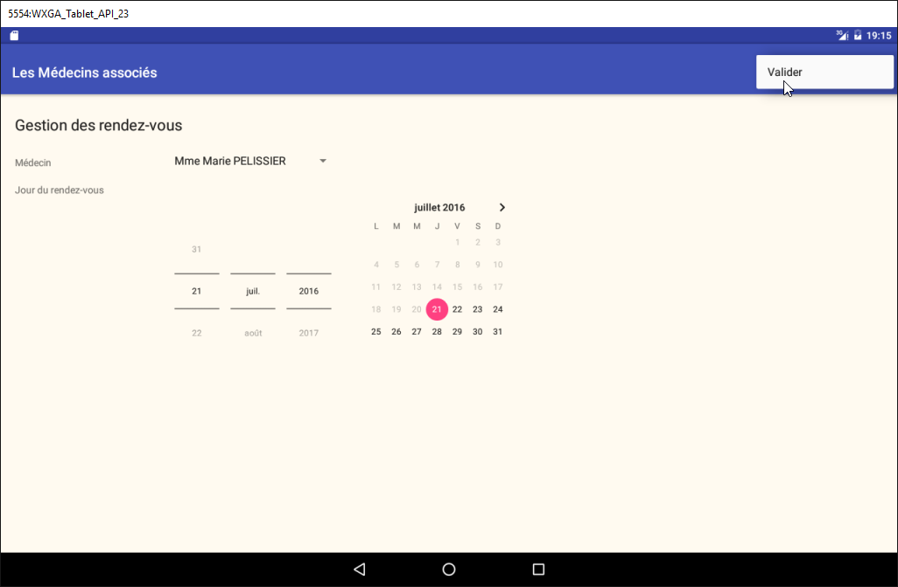
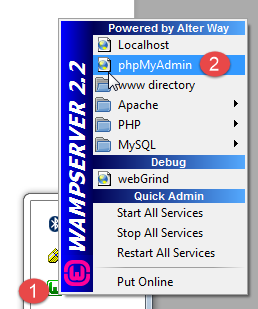
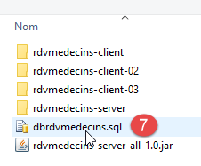
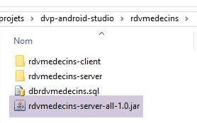
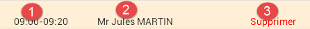
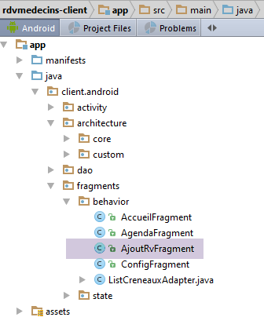

3. Casestudy – Afspraakbeheer
3.1. Het project
In het document [Tutoriel AngularJS / Spring 4] is een client/server-applicatie ontwikkeld voor het beheer van doktersafspraken. Hierna zullen we naar dit document verwijzen als [rdvmedecins-angular]. De applicatie had twee soorten clients:
- een client HTML / CSS / JS;
- een Android-client;
De Android-client werd automatisch gegenereerd op basis van de versie HTML van de client met behulp van de tool [Cordova]. Het doel van dit project is om deze Android-client handmatig opnieuw te maken met behulp van de kennis die in de voorgaande hoofdstukken is opgedaan.
Er is een belangrijk verschil tussen de twee oplossingen:
- de client die we gaan maken, zal alleen bruikbaar zijn op Android-tablets;
- in de versie [rdvmedecins-angular] is de mobiele webclient (HTML / CSS / JS) is bruikbaar op elk platform (Android, IoS, Windows);
3.2. De weergaven van de Android-client
Er zijn vier weergaven.
Configuratieweergave

Weergave voor het kiezen van de arts en de afspraakdatum

Weergave voor de keuze van het tijdvak voor de afspraak

Weergave van de keuze van de klant voor de afspraak

3.3. De architectuur van het project
We zullen een client/server-architectuur hanteren die vergelijkbaar is met die van het voorbeeld [Exemple-15] (zie paragraaf 1.16) in dit document:

De asynchrone communicatie tussen de client en de server wordt afgehandeld met de bibliotheek RxAndroid.
3.4. De database
Deze speelt geen fundamentele rol in dit document. We vermelden deze ter informatie. We noemen deze [dbrdvmedecins] . Het is een database MySQL5 met vier tabellen:
 |
3.4.1. De tabel [MEDECINS]
Deze bevat informatie over de artsen die worden beheerd door de applicatie [RdvMedecins].
 |  |
- ID: identificatienummer van de arts – primaire sleutel van de tabel
- VERSION: identificatienummer van de versie van de rij in de tabel. Dit nummer wordt telkens met 1 verhoogd wanneer er een wijziging in de rij wordt aangebracht.
- NOM: de achternaam van de arts
- PRENOM: zijn of haar voornaam
- TITRE: zijn/haar aanspreektitel (mevrouw, meisje, meneer)
3.4.2. De tabel [CLIENTS]
De cliënten van de verschillende artsen worden opgeslagen in de tabel [CLIENTS]:
 |  |
- ID: identificatienummer van de patiënt – primaire sleutel van de tabel
- VERSION: nummer dat de versie van de rij in de tabel identificeert. Dit nummer wordt telkens met 1 verhoogd wanneer er een wijziging in de rij wordt aangebracht.
- NOM: de naam van de klant
- PRENOM: de voornaam van de klant
- TITRE: de aanspreektitel (mevrouw, mevrouw, mijnheer)
3.4.3. De tabel [CRENEAUX]
Deze tabel geeft een overzicht van de tijdvakken waarin de RV mogelijk zijn:
 |
 |  |  |
- ID: nummer dat het tijdvak identificeert – primaire sleutel van de tabel (regel 8)
- VERSION: identificatienummer van de versie van de rij in de tabel. Dit getal wordt telkens met 1 verhoogd wanneer er een wijziging in de rij wordt aangebracht.
- ID_MEDECIN: nummer dat de arts identificeert aan wie dit tijdslot toebehoort – vreemde sleutel op de kolom MEDECINS (ID).
- HDEBUT: starttijd van het tijdslot
- MDEBUT: minuten begin van het tijdslot
- HFIN: eindtijd van het tijdvak
- MFIN: eindminuten van het tijdslot
De tweede regel van de tabel [CRENEAUX] (zie [1] hierboven) geeft bijvoorbeeld aan dat tijdvak nr. 2 om 8.20 uur begint en om 8.40 uur eindigt en toebehoort aan arts nr. 1 (mevrouw Marie PELISSIER).
3.4.4. De tabel [RV]
Deze tabel geeft een overzicht van de RV die voor elke arts zijn vastgelegd:
 |  |
- ID: nummer dat de RV op unieke wijze identificeert – primaire sleutel
- JOUR: dag van het RV
- ID_CRENEAU: tijdvak van RV – externe sleutel op het veld [ID] van de tabel [CRENEAUX] – bepaalt zowel het tijdvak als de betreffende arts.
- ID_CLIENT: nummer van de klant voor wie de reservering is gemaakt – externe sleutel op het veld [ID] van de tabel [CLIENTS]
Deze tabel heeft een uniekheids -beperking op de waarden van de gekoppelde kolommen (JOUR, ID_CRENEAU):
Als een rij in de tabel [RV] de waarde (JOUR1, ID_CRENEAU1) voor de kolommen (JOUR, ID_CRENEAU), dan mag deze waarde nergens anders voorkomen. Anders zou dit betekenen dat er twee RV’en tegelijkertijd voor dezelfde arts zijn vastgelegd. Vanuit het oogpunt van Java-programmering start de driver JDBC van de database een SQLException wanneer dit zich voordoet.
De regel met id gelijk aan 3 (zie [1] hierboven) betekent dat er op 23/08/2006 een RV is geboekt voor tijdvak nr. 20 en klant nr. 4. Uit de tabel [CRENEAUX] blijkt dat tijdvak nr. 20 overeenkomt met het tijdvak 16.20 - 16.40 uur en toebehoort aan arts nr. 1 (mevrouw Marie PELISSIER). Uit de tabel [CLIENTS] blijkt dat klant nr. 4 mevrouw Brigitte BISTROU is.
3.4.5. Het aanmaken van de database
Om de tabellen aan te maken en te vullen, kunt u het script [dbrdvmedecins.sql] gebruiken, dat u kunt vinden in het voorbeeldarchief |ICI|.
 |
Met [WampServer] (zie paragraaf 6.15) kunt u als volgt te werk gaan:
 |  |
- in [1] klikt men op het pictogram van [WampServer] en kiest men de optie [PhpMyAdmin] [2],
- in [3], selecteer je in het venster dat is geopend de link [Bases de données],
 |
- en [4-6], importeer je een bestand SQL,
 |  |  |
- in [7] selecteren we het script SQL en in [8] voeren we het uit,
- in [9] zijn de tabellen van de database aangemaakt. We volgen een van de links,
 |
- in [10], de inhoud van de tabel.
Vervolgens zullen we niet meer op deze database terugkomen, maar de lezer wordt uitgenodigd om de ontwikkeling ervan tijdens de tests te volgen, vooral wanneer de applicatie niet werkt.
3.5. De webserver / jSON
We richten ons hier op de server [1]. We gaan deze niet verder uitwerken. Deze is gedetailleerd beschreven in het document [Spring MVC et Thymeleaf par l'exemple]. De geïnteresseerde lezer kan daar naar verwijzen. Hij is op dezelfde manier ontwikkeld als die van de server uit voorbeeld 15. De broncode ervan is opgenomen in de voorbeelden. We gaan hier het binaire bestand ervan gebruiken:
 |
- [rdvmedecins-server-all-1.0.jar] is het binaire bestand van de server;
3.5.1. Implementatie
Ga in een opdrachtvenster naar de map die het binaire bestand van de server bevat:
...\rdvmedecins>dir
Le volume dans le lecteur D s’appelle Données
Le numéro de série du volume est 7A34-AE5F
Répertoire de D:\data\istia-1516\projets\dvp-android-studio\rdvmedecins
09/06/2016 10:50 <DIR> .
09/06/2016 10:50 <DIR> ..
06/07/2014 16:36 7 631 dbrdvmedecins.sql
08/06/2016 16:31 <DIR> rdvmedecins-client
08/06/2016 16:22 <DIR> rdvmedecins-server
08/06/2016 16:23 29 618 709 rdvmedecins-server-all-1.0.jar
om de server te starten, voer je vervolgens de volgende opdracht in (SGBD en MySQL moeten al gestart zijn):
...\rdvmedecins>java -jar rdvmedecins-server-all-1.0.jar
. ____ _ __ _ _
/\\ / ___'_ __ _ _(_)_ __ __ _ \ \ \ \
( ( )\___ | '_ | '_| | '_ \/ _` | \ \ \ \
\\/ ___)| |_)| | | | | || (_| | ) ) ) )
' |____| .__|_| |_|_| |_\__, | / / / /
=========|_|==============|___/=/_/_/_/
:: Spring Boot :: (v1.0)
10:55:48.617 [main] INFO rdvmedecins.boot.Boot - Starting Boot v1.0 on st-PC (D:\data\istia-1516\projets\dvp-android-studio\rdvmedecins\rdvmedecins-server-all-1.0.jar started by st in D:\data\istia-1516\projets\dvp-android-studio\rdvmedecins)
10:55:48.621 [main] INFO rdvmedecins.boot.Boot - No active profile set, falling back to default profiles: default
10:55:48.662 [main] INFO o.s.b.c.e.AnnotationConfigEmbeddedWebApplicationContext - Refreshing org.springframework.boot.context.embedded.AnnotationConfigEmbeddedWebApplicationContext@7085bdee: startup date [Thu Jun 09 10:55:48 CEST 2016]; root of context hierarchy
10:55:49.948 [main] INFO o.s.b.c.e.t.TomcatEmbeddedServletContainer - Tomcat initialized with port(s): 8080 (http)
juin 09, 2016 10:55:50 AM org.apache.catalina.core.StandardService startInternal
INFOS: Starting service Tomcat
juin 09, 2016 10:55:50 AM org.apache.catalina.core.StandardEngine startInternal
INFOS: Starting Servlet Engine: Apache Tomcat/8.0.33
juin 09, 2016 10:55:50 AM org.apache.catalina.core.ApplicationContext log
INFOS: Initializing Spring embedded WebApplicationContext
10:55:50.255 [localhost-startStop-1] INFO o.s.web.context.ContextLoader - Root
WebApplicationContext: initialization completed in 1596 ms
...
10:55:55.765 [localhost-startStop-1] INFO o.s.s.web.DefaultSecurityFilterChain
- Creating filter chain: ...]
10:55:55.785 [localhost-startStop-1] INFO o.s.b.c.e.ServletRegistrationBean - Mapping servlet: 'dispatcherServlet' to [/*]
10:55:55.791 [localhost-startStop-1] INFO o.s.b.c.e.FilterRegistrationBean - Mapping filter: 'springSecurityFilterChain' to: [/*]
...
10:55:56.249 [main] INFO o.s.w.s.m.m.a.RequestMappingHandlerMapping - Mapped "{[/getAllCreneaux/{idMedecin}],methods=[GET],produces=[application/json;charset=UTF-8]}" onto public java.lang.String rdvmedecins.controllers.RdvMedecinsController.getAllCreneaux(long,javax.servlet.http.HttpServletResponse,java.lang.String)
throws com.fasterxml.jackson.core.JsonProcessingException
10:55:56.252 [main] INFO o.s.w.s.m.m.a.RequestMappingHandlerMapping - Mapped "{[/getRvMedecinJour/{idMedecin}/{jour}],methods=[GET],produces=[application/json;charset=UTF-8]}" onto public java.lang.String rdvmedecins.controllers.RdvMedecinsController.getRvMedecinJour(long,java.lang.String,javax.servlet.http.HttpServletResponse,java.lang.String) throws com.fasterxml.jackson.core.JsonProcessingException
10:55:56.255 [main] INFO o.s.w.s.m.m.a.RequestMappingHandlerMapping - Mapped "{[/getCreneauById/{id}],methods=[GET],produces=[application/json;charset=UTF-8]}" onto public java.lang.String rdvmedecins.controllers.RdvMedecinsController.getCreneauById(long,javax.servlet.http.HttpServletResponse,java.lang.String) throws
com.fasterxml.jackson.core.JsonProcessingException
10:55:56.257 [main] INFO o.s.w.s.m.m.a.RequestMappingHandlerMapping - Mapped "{[/ajouterRv],methods=[POST],consumes=[application/json;charset=UTF-8],produces=[application/json;charset=UTF-8]}" onto public java.lang.String rdvmedecins.controllers.RdvMedecinsController.ajouterRv(rdvmedecins.models.PostAjouterRv,javax.servlet.http.HttpServletResponse,java.lang.String) throws com.fasterxml.jackson.core.JsonProcessingException
10:55:56.259 [main] INFO o.s.w.s.m.m.a.RequestMappingHandlerMapping - Mapped "{[/getAllClients],methods=[GET],produces=[application/json;charset=UTF-8]}" onto
public java.lang.String rdvmedecins.controllers.RdvMedecinsController.getAllClients(javax.servlet.http.HttpServletResponse,java.lang.String) throws com.fasterxml.jackson.core.JsonProcessingException
10:55:56.261 [main] INFO o.s.w.s.m.m.a.RequestMappingHandlerMapping - Mapped "{[/getClientById/{id}],methods=[GET],produces=[application/json;charset=UTF-8]}"
onto public java.lang.String rdvmedecins.controllers.RdvMedecinsController.getClientById(long,javax.servlet.http.HttpServletResponse,java.lang.String) throws com.fasterxml.jackson.core.JsonProcessingException
10:55:56.264 [main] INFO o.s.w.s.m.m.a.RequestMappingHandlerMapping - Mapped "{[/getMedecinById/{id}],methods=[GET],produces=[application/json;charset=UTF-8]}" onto public java.lang.String rdvmedecins.controllers.RdvMedecinsController.getMedecinById(long,javax.servlet.http.HttpServletResponse,java.lang.String) throws com.fasterxml.jackson.core.JsonProcessingException
10:55:56.266 [main] INFO o.s.w.s.m.m.a.RequestMappingHandlerMapping - Mapped "{[/getRvById/{id}],methods=[GET],produces=[application/json;charset=UTF-8]}" onto public java.lang.String rdvmedecins.controllers.RdvMedecinsController.getRvById(long,javax.servlet.http.HttpServletResponse,java.lang.String) throws com.fasterxml.jackson.core.JsonProcessingException
10:55:56.268 [main] INFO o.s.w.s.m.m.a.RequestMappingHandlerMapping - Mapped "{[/getAllMedecins],methods=[GET],produces=[application/json;charset=UTF-8]}" onto public java.lang.String rdvmedecins.controllers.RdvMedecinsController.getAllMedecins(javax.servlet.http.HttpServletResponse,java.lang.String) throws com.fasterxml.jackson.core.JsonProcessingException
10:55:56.270 [main] INFO o.s.w.s.m.m.a.RequestMappingHandlerMapping - Mapped "{[/supprimerRv],methods=[POST],consumes=[application/json;charset=UTF-8],produces=[application/json;charset=UTF-8]}" onto public java.lang.String rdvmedecins.controllers.RdvMedecinsController.supprimerRv(rdvmedecins.models.PostSupprimerRv,javax.servlet.http.HttpServletResponse,java.lang.String) throws com.fasterxml.jackson.core.JsonProcessingException
10:55:56.273 [main] INFO o.s.w.s.m.m.a.RequestMappingHandlerMapping - Mapped "{[/authenticate],methods=[GET],produces=[application/json;charset=UTF-8]}" onto public java.lang.String rdvmedecins.controllers.RdvMedecinsController.authenticate(javax.servlet.http.HttpServletResponse,java.lang.String) throws com.fasterxml.jackson.core.JsonProcessingException
10:55:56.276 [main] INFO o.s.w.s.m.m.a.RequestMappingHandlerMapping - Mapped "{[/getAgendaMedecinJour/{idMedecin}/{jour}],methods=[GET],produces=[application/json;charset=UTF-8]}" onto public java.lang.String rdvmedecins.controllers.RdvMedecinsController.getAgendaMedecinJour(long,java.lang.String,javax.servlet.http.HttpServletResponse,java.lang.String) throws com.fasterxml.jackson.core.JsonProcessingException
...
10:55:56.681 [main] INFO o.s.b.c.e.t.TomcatEmbeddedServletContainer - Tomcat started on port(s): 8080 (http)
10:55:56.686 [main] INFO rdvmedecins.boot.Boot - Started Boot in 8.231 seconds
De server geeft veel logberichten weer. Hierboven hebben we alleen die weergegeven die nuttig zijn om het proces te begrijpen:
- regels 14-18: er wordt een ingebouwde Tomcat-server gestart op poort 8080 van de machine. Deze server voert de webapplicatie voor afsprakenbeheer uit. Deze applicatie is in feite een webservice / jSON: deze wordt opgevraagd via URL en reageert door een jSON-string te verzenden;
- regel 24: de webservice is beveiligd met het [Spring Security]-framework. Toegang tot de URL van de webservice wordt verkregen door authenticatie;
- regels 29-44: de URL die door de webservice worden aangeboden;
We zullen deze punten nader toelichten.
3.5.2. Beveiliging van de webservice
De door de webservice aangeboden URL-bestanden zijn beveiligd. De server verwacht in het HTTP-verzoek van de client de volgende header:
De verwachte code is de Base64-codering [http://fr.wikipedia.org/wiki/Base64] van de tekenreeks 'gebruiker:wachtwoord'. De webservice accepteert in de standaardinstelling alleen een gebruiker 'admin' met het wachtwoord 'admin'. De bovenstaande header wordt voor deze specifieke gebruiker de volgende regel:
Om deze header HTTP te kunnen verzenden, gebruiken we de client HTTP [Advanced Rest Client], een plug-in voor de Chrome-browser (zie paragraaf 6.13). We gaan de verschillende URL die door de webservice worden aangeboden handmatig testen om inzicht te krijgen in:
- welke parameters de URL verwacht;
- wat de exacte aard van het antwoord is;
3.5.3. Lijst met artsen
Met de URL [/getAllMedecins] kan de lijst met artsen worden opgevraagd:
 |
- in [1], de opgevraagde URL;
- in [2], de methode HTTP die voor deze opvraging is gebruikt;
- in [3], de beveiligingsheader HTTP van de gebruiker (admin, admin);
- in [4] wordt het verzoek HTTP verzonden;
Het antwoord van de server is als volgt:
 |
- in [5] wordt het antwoord jSON van de server weergegeven, opgemaakt;
 |
- in [6], hetzelfde antwoord in onbewerkte vorm;
De vorm [5] maakt het mogelijk de structuur van het antwoord beter te zien. Alle antwoorden van de webservice zijn een instantie van de volgende klasse [Response]:
package rdvmedecins.android.dao.service;
import java.util.List;
public class Response<T> {
// ----------------- eigenschappen
// status van de bewerking
private int status;
// eventuele foutmeldingen
private List<String> messages;
// de inhoud van het antwoord
private T body;
// constructors
public Response() {
}
public Response(int status, List<String> messages, T body) {
this.status = status;
this.messages = messages;
this.body = body;
}
// getters en setters
...
}
- regel 9: de status van het antwoord. De waarde 0 betekent dat er geen fout is opgetreden, anders is er wel een fout opgetreden;
- regel 11: een lijst met foutmeldingen als er een fout is opgetreden;
- regel 13: het antwoord dat de client daadwerkelijk verwachtte;
Het antwoord op URL [/getAllMedecins] is de tekenreeks jSON van een object van het type [Response<List<Medecin>>]. De klasse [Medecin] is als volgt:
package rdvmedecins.android.dao.entities;
public class Medecin extends Personne {
// standaardconstructor
public Medecin() {
}
// constructor met parameters
public Medecin(String titre, String nom, String prenom) {
super(titre, nom, prenom);
}
public String toString() {
return String.format("Medecin[%s]", super.toString());
}
}
Regel 3: de klasse [Medecin] is een uitbreiding van de volgende klasse [Personne]:
package rdvmedecins.android.dao.entities;
public class Personne extends AbstractEntity {
// attributen van een persoon
private String titre;
private String nom;
private String prenom;
// standaardconstructor
public Personne() {
}
// constructor met parameters
public Personne(String titre, String nom, String prenom) {
this.titre = titre;
this.nom = nom;
this.prenom = prenom;
}
// toString
public String toString() {
return String.format("Personne[%s, %s, %s, %s, %s]", id, version, titre, nom, prenom);
}
// getters en setters
...
}
Regel 3: de klasse [Personne] is een uitbreiding van de volgende klasse [AbstractEntity]:
package rdvmedecins.android.dao.entities;
import java.io.Serializable;
public class AbstractEntity implements Serializable {
private static final long serialVersionUID = 1L;
protected Long id;
protected Long version;
@Override
public int hashCode() {
int hash = 0;
hash += (id != null ? id.hashCode() : 0);
return hash;
}
// initialisatie
public AbstractEntity build(Long id, Long version) {
this.id = id;
this.version = version;
return this;
}
@Override
public boolean equals(Object entity) {
String class1 = this.getClass().getName();
String class2 = entity.getClass().getName();
if (!class2.equals(class1)) {
return false;
}
AbstractEntity other = (AbstractEntity) entity;
return this.id == other.id;
}
// getters en setters
...
}
Uiteindelijk is de structuur van een object [Medecin] als volgt:
[Long id; Long version; String titre; String nom; String prenom;]
en die van [Response<List<Medecin>>] is als volgt:
Vervolgens zullen we deze verkorte definities gebruiken om de reactie van de server te beschrijven. Overigens zullen we een tijdje geen schermafbeeldingen meer tonen. Het volstaat om te herhalen wat we zojuist hebben gezien. We zullen terugkomen op de schermafbeeldingen wanneer we een verzoek POST moeten uitvoeren. We zullen ook een uitvoervoorbeeld presenteren in de volgende vorm:
3.5.4. Klantenlijst
| |
|
Voorbeeld:
3.5.5. Overzicht van de spreekuren van een arts
|
- [idMedecin]: identificatiecode van de arts waarvan de consulttijdvakken worden opgevraagd;
- [hdebut]: aanvangstijd van het consult;
- [mdebut]: minuut waarop het consult begint;
- [hfin]: eindtijd van het consult;
- [mfin]: de minuten waarop het consult eindigt;
Voor een tijdslot tussen 10.20 en 10.40 uur is [hdebut, mdebut, hfin, mfin] = [10, 20, 10, 40].
Voorbeeld:
3.5.6. Lijst met afspraken van een arts
|
- [idMedecin]: identificatiecode van de arts waarvan de afspraken worden opgevraagd;
- URL [jour]: dag van de afspraken in de vorm 'jjjj-mm-dd';
- Antwoord [jour]: idem, maar in de vorm van een Java-datum;
- [client]: de klant van de afspraak. De structuur hiervan is eerder beschreven;
- [idClient]: de klant-ID;
- [creneau]: het tijdvak van de afspraak. De structuur hiervan is eerder beschreven;
- [idCreneau]: de identificatiecode van het tijdvak;
Voorbeeld:
3.5.7. De agenda van een arts
|
- [idMedecin]: identificatiecode van de arts waarvan de afspraken worden opgevraagd;
- URL [jour]: dag van de afspraken in de vorm 'jjjj-mm-dd';
- [agenda]: agenda van de arts;
- [medecin]: de betreffende arts. De structuur hiervan is eerder gedefinieerd;
- Antwoord [jour]: de dag van de agenda in de vorm van een Java-datum;
- [creneauxMedecinJour]: een array van elementen van het type [CreneauMedecinJour];
- [creneau]: een tijdslot. De structuur hiervan is eerder beschreven;
- [rv]: een afspraak. De structuur hiervan is eerder beschreven;
Voorbeeld:
|
Er is onderscheid gemaakt tussen het geval waarin er een afspraak in het tijdslot is en het geval waarin dat niet zo is.
3.5.8. Een arts opzoeken aan de hand van zijn identificatienummer
|
- [idMedecin]: de identificatiecode van de arts;
Voorbeeld 1:
Voorbeeld 2:
3.5.9. Een klant opzoeken op basis van zijn ID
|
- [idClient]: de klant-ID;
Voorbeeld 1:
Voorbeeld 2:
3.5.10. Een tijdvak opvragen op basis van de ID
|
- [idCreneau]: de identificatiecode van het tijdvak;
Voorbeeld 1:
Merk op dat in het antwoord niet de arts wordt vermeld die eigenaar is van het tijdvak, maar alleen zijn identificatiecode.
Voorbeeld 2:
3.5.11. Een afspraak maken met uw gebruikersnaam
|
- [idRv]: de identificatiecode van de afspraak;
Voorbeeld 1:
Merk op dat in het antwoord noch de klant, noch het tijdvak van de afspraak wordt vermeld, maar alleen hun identificatiecodes.
Voorbeeld 2:
3.5.12. Een afspraak toevoegen
Met de URL [/ajouterRv] kunt u een afspraak toevoegen. De gegevens die hiervoor nodig zijn (de dag, het tijdvak en de klant) worden doorgegeven via een verzoek HTTP POST. We laten zien hoe je dit verzoek kunt uitvoeren met de tool [Advanced Rest Client].

- in [1] wordt de URL opgevraagd;
- in [2] wordt deze opgevraagd door een POST;
- in [3-4] wordt aan de server aangegeven dat de waarden die naar de server worden verzonden, de vorm hebben van een tekenreeks jSON;
- in [4], de header HTTP voor de authenticatie;
- in [5], de informatie die door POST wordt doorgegeven. Dit is een tekenreeks jSON die het volgende bevat:
- [jour]: de dag van de afspraak in de vorm 'jjjj-mm-dd',
- [idClient]: het identificatienummer van de cliënt voor wie de afspraak is gemaakt,
- [idCreneau]: de identificatiecode van het tijdvak van de afspraak. Aangezien een tijdvak bij een specifieke arts hoort, wordt hiermee ook de arts aangeduid;
- in [6] wordt het verzoek verzonden;
De string jSON die wordt verzonden, is die van het volgende object van het type [PostAjouterRv]:
public class PostAjouterRv {
// gegevens van het bericht
private String jour;
private long idClient;
private long idCreneau;
// constructors
public PostAjouterRv() {
}
public PostAjouterRv(String jour, long idCreneau, long idClient) {
this.jour = jour;
this.idClient = idClient;
this.idCreneau = idCreneau;
}
// getters en setters
...
}
Het antwoord van de server is van het type [Response<Rv>] [int status; List<String> messages; Rv rv], waarbij [rv] de toegevoegde afspraak is.
Het antwoord van de server op het bovenstaande verzoek is als volgt:
 |
Hierbij valt op dat bepaalde gegevens niet in [idClient, idCreneau] zijn opgenomen, maar wel te vinden zijn in de velden [client] en [creneau]. De belangrijke informatie is de ID van de toegevoegde afspraak (209). De webservice had volstaan met het terugsturen van alleen deze informatie.
3.5.13. Een afspraak verwijderen
Deze handeling gebeurt eveneens via een POST:
|
De geplaatste waarde is de tekenreeks jSON van een object van het type [PostSupprimerRv], namelijk:
public class PostSupprimerRv {
// postgegevens
private long idRv;
// constructors
public PostSupprimerRv() {
}
public PostSupprimerRv(long idRv) {
this.idRv = idRv;
}
// getters en setters
...
}
- regel 4: [idRv] is de ID van de afspraak die moet worden verwijderd.
Voorbeeld 1:
De afspraak met nr. 209 is inderdaad verwijderd vanwege [status=0].
Voorbeeld 2:
3.6. De Android-client
Nu de server [1] in detail is beschreven en operationeel is, gaan we de Android-client [2] bekijken.
3.6.1. Architectuur van het Android Studio-project
Het project volgt de architectuur van het project [client-android-skel] (zie paragraaf 1.17). In de bovenstaande architectuur van de Android-client onderscheiden we drie blokken:
- de [DAO]-laag, die verantwoordelijk is voor de communicatie met de webservice;
- de [vues]-lagen die zorgen voor de communicatie met de gebruiker;
- de [activité] die de verbinding vormt tussen de twee voorgaande blokken. De weergaven hebben geen kennis van de [DAO]-laag. Ze communiceren uitsluitend met de activiteit.
Deze architectuur komt tot uiting in de architectuur van het Android Studio-project van de Android-client:
 |
- het pakket [activity] implementeert de activiteit;
- het pakket [architecture] bevat de architectuurelementen die we eerder hebben ontwikkeld;
- het pakket [dao] implementeert de laag [DAO];
- het pakket [fragments] implementeert de [vues];
3.6.2. Aanpassing van het project
 |
De map [architecture / custom] bevat de aanpasbare elementen van de architectuur.
De interface [IMainActivity] ziet er als volgt uit:
package client.android.architecture.custom;
import client.android.architecture.core.ISession;
import client.android.dao.service.IDao;
public interface IMainActivity extends IDao {
// toegang tot de sessie
ISession getSession();
// van weergave wisselen
void navigateToView(int position, ISession.Action action);
// afhandeling van wachtrijen
void beginWaiting();
void cancelWaiting();
// applicatieconstanten -------------------------------------
// debugmodus
boolean IS_DEBUG_ENABLED = true;
// maximale wachttijd voor het antwoord van de server
int TIMEOUT = 1000;
// wachttijd voordat de clientverzoek wordt uitgevoerd
int DELAY = 000;
// basisauthenticatie
boolean IS_BASIC_AUTHENTIFICATION_NEEDED = true;
// aaneenschakeling van fragmenten
int OFF_SCREEN_PAGE_LIMIT = 1;
// tabbladbalk
boolean ARE_TABS_NEEDED = false;
// laadafbeelding
boolean IS_WAITING_ICON_NEEDED = true;
// aantal fragmenten van de applicatie
int FRAGMENTS_COUNT = 4;
// aantal weergaven
int VUE_CONFIG = 0;
int VUE_ACCUEIL = 1;
int VUE_AGENDA = 2;
int VUE_AJOUT_RV = 3;
}
- regels 25, 28: aanpassing van de laag [DAO];
- regel 31: deze applicatie voert geauthentificeerde toegangen tot de server uit;
- regel 40: er is een laadafbeelding nodig;
- regel 43: de applicatie heeft vier fragmenten;
- regels 46-49: de nummers van de vier fragmenten;
- regel 37: er zijn geen tabbladen;
De basisklasse [CoreState] voor de fragmentstatussen ziet er als volgt uit:
package client.android.architecture.custom;
import client.android.architecture.core.MenuItemState;
import client.android.fragments.state.AccueilFragmentState;
import client.android.fragments.state.AgendaFragmentState;
import client.android.fragments.state.AjoutRvFragmentState;
import client.android.fragments.state.ConfigFragmentState;
import com.fasterxml.jackson.annotation.JsonIgnoreProperties;
import com.fasterxml.jackson.annotation.JsonSubTypes;
import com.fasterxml.jackson.annotation.JsonTypeInfo;
@JsonIgnoreProperties(ignoreUnknown = true)
@JsonTypeInfo(use = JsonTypeInfo.Id.NAME, include = JsonTypeInfo.As.PROPERTY)
@JsonSubTypes({
@JsonSubTypes.Type(value = AccueilFragmentState.class),
@JsonSubTypes.Type(value = AgendaFragmentState.class),
@JsonSubTypes.Type(value = AjoutRvFragmentState.class),
@JsonSubTypes.Type(value = ConfigFragmentState.class)
}
)
public class CoreState {
// fragment al dan niet bezocht
protected boolean hasBeenVisited = false;
// status van het eventuele menu van het fragment
protected MenuItemState[] menuOptionsState;
// getters en setters
...
}
- regels 15-18: de vier fragmenten hebben een status:
 |
Ten slotte bevat de sessie de gegevens die door de fragmenten worden gedeeld:
package client.android.architecture.custom;
import client.android.architecture.core.AbstractSession;
import client.android.dao.entities.AgendaMedecinJour;
import client.android.dao.entities.Client;
import client.android.dao.entities.Medecin;
import client.android.fragments.state.AccueilFragmentState;
import client.android.fragments.state.AgendaFragmentState;
import client.android.fragments.state.AjoutRvFragmentState;
import client.android.fragments.state.ConfigFragmentState;
import java.util.List;
public class Session extends AbstractSession {
// elementen die niet in jSON kunnen worden geserialiseerd, moeten de annotatie @JsonIgnore hebben
// lijst met artsen
private List<Medecin> médecins;
// lijst met klanten
private List<Client> clients;
// agenda van een arts voor een bepaalde dag
private AgendaMedecinJour agenda;
// positie van het aangeklikte element in de agenda
private int position;
// dag van de afspraak in Engelse notatie "yyyy-MM-dd"
private String dayRv;
// dag van de afspraak in Franse notatie "dd-MM-yyyy"
private String jourRv;
// getters en setters
...
}
- regels 17-28: de sessie slaat zes gegevens op. We zullen de rol hiervan uitleggen wanneer dat nodig is.
3.6.3. De laag [DAO]
 |
 |  |
- in [1], de entiteiten die in de antwoorden van de server zijn ingekapseld. Deze zijn beschreven in paragraaf 3.5;
- in [2], de elementen van de client die de communicatie met de server beheren;
We zullen niet terugkomen op de elementen [1]. Deze zijn al besproken. De lezer wordt verzocht indien nodig terug te gaan naar paragraaf 3.5. We gaan de implementatie van het pakket [service] bestuderen. Dit brengt ons ertoe om ook de implementatie van de beveiligde communicatie tussen de client en de server te bespreken.
3.6.3.1. Implementatie van de communicatie tussen client en server
 |
De klasse [WebClient] is een component van AA die het volgende beschrijft:
- de URL die door de webservice worden aangeboden;
- hun parameters;
- hun antwoorden;
package rdvmedecins.android.dao.service;
import rdvmedecins.android.dao.entities.*;
import org.androidannotations.rest.spring.annotations.*;
import org.androidannotations.rest.spring.api.RestClientRootUrl;
import org.androidannotations.rest.spring.api.RestClientSupport;
import org.springframework.http.converter.json.MappingJackson2HttpMessageConverter;
import org.springframework.web.client.RestTemplate;
import java.util.List;
@Rest(converters = {MappingJackson2HttpMessageConverter.class})
public interface WebClient extends RestClientRootUrl, RestClientSupport {
// RestTemplate
public void setRestTemplate(RestTemplate restTemplate);
// lijst met artsen
@Get("/getAllMedecins")
public Response<List<Medecin>> getAllMedecins();
// lijst met klanten
@Get("/getAllClients")
public Response<List<Client>> getAllClients();
// lijst met beschikbare tijdvakken van een arts
@Get("/getAllCreneaux/{idMedecin}")
public Response<List<Creneau>> getAllCreneaux(@Path long idMedecin);
// lijst met afspraken van een arts
@Get("/getRvMedecinJour/{idMedecin}/{jour}")
public Response<List<Rv>> getRvMedecinJour(@Path long idMedecin, @Path String jour);
// Cliënt
@Get("/getClientById/{id}")
public Response<Client> getClientById(@Path long id);
// Arts
@Get("/getMedecinById/{id}")
public Response<Medecin> getMedecinById(@Path long id);
// Afspraak
@Get("/getRvById/{id}")
public Response<Rv> getRvById(@Path long id);
// Tijdvak
@Get("/getCreneauById/{id}")
public Response<Creneau> getCreneauById(@Path long id);
// een afspraak toevoegen RV
@Post("/ajouterRv")
public Response<Rv> ajouterRv(@Body PostAjouterRv post);
// Een afspraak verwijderen
@Post("/supprimerRv")
public Response<Rv> supprimerRv(@Body PostSupprimerRv post);
// De agenda van een arts opvragen
@Get(value = "/getAgendaMedecinJour/{idMedecin}/{jour}")
public Response<AgendaMedecinJour> getAgendaMedecinJour(@Path long idMedecin, @Path String jour);
}
- regels 19-60: hier staan alle URL-componenten die in paragraaf 3.5 zijn besproken;
- regel 16: de component [RestTemplate] van [Spring Android] waarop de communicatie tussen client en server is gebaseerd;
3.6.3.2. De interface [IDao]
 |
De interface [IDao] van de laag [DAO] is als volgt:
package rdvmedecins.android.dao.service;
import rdvmedecins.android.dao.entities.*;
import rx.Observable;
import java.util.List;
public interface IDao {
// URL van de webservice
public void setUrlServiceWebJson(String url);
// gebruiker
public void setUser(String user, String mdp);
// time-out van de client
public void setTimeout(int timeout);
// lijst met klanten
public Observable<List<Client>> getAllClients();
// lijst met artsen
public Observable<List<Medecin>> getAllMedecins();
// lijst met tijdvakken van een arts
public Observable<List<Creneau>> getAllCreneaux(long idMedecin);
// lijst met afspraken van een arts op een bepaalde dag
public Observable<List<Rv>> getRvMedecinJour(long idMedecin, String jour);
// een klant zoeken op basis van zijn ID
public Observable<Client> getClientById(long id);
// een arts zoeken op basis van zijn ID
public Observable<Medecin> getMedecinById(long id);
// een afspraak zoeken op basis van de id
public Observable<Rv> getRvById(long id);
// een tijdslot zoeken op basis van de id
public Observable<Creneau> getCreneauById(long id);
// een RV toevoegen
public Observable<Rv> ajouterRv(String jour, long idCreneau, long idClient);
// een RV verwijderen
public Observable<Rv> supprimerRv(long idRv);
// functie
public Observable<AgendaMedecinJour> getAgendaMedecinJour(long idMedecin, String jour);
// debugmodus
void setDebugMode(boolean isDebugEnabled);
}
- regel 10: om de URL van de webservice / jSON vast te leggen;
- regel 13: om de gebruiker van de client/server-communicatie in te stellen. [user] is de gebruikersnaam, [mdp] het wachtwoord;
- regel 16: om een maximale wachttijd voor het antwoord van de server vast te stellen;
- regels 18-49: aan elke door de webservice blootgestelde URL komt een methode overeen. Deze nemen de handtekening over van de methoden met dezelfde naam van de component AA [WebClient];
- regel 52: om de modus debug van de laag [DAO] te controleren;
3.6.3.3. De klasse [Dao]
 |
De implementatie [DAO] van de voorgaande interface [IDao] is als volgt:
package client.android.dao.service;
import android.util.Log;
import client.android.dao.entities.*;
import org.androidannotations.annotations.AfterInject;
import org.androidannotations.annotations.Bean;
import org.androidannotations.annotations.EBean;
import org.androidannotations.rest.spring.annotations.RestService;
import org.springframework.http.client.ClientHttpRequestInterceptor;
import org.springframework.http.client.SimpleClientHttpRequestFactory;
import org.springframework.http.converter.json.MappingJackson2HttpMessageConverter;
import org.springframework.web.client.RestTemplate;
import rx.Observable;
import java.util.ArrayList;
import java.util.List;
@EBean(scope = EBean.Scope.Singleton)
public class Dao extends AbstractDao implements IDao {
// webserviceklant
@RestService
protected WebClient webClient;
// beveiliging
@Bean
protected MyAuthInterceptor authInterceptor;
// de RestTemplate
private RestTemplate restTemplate;
// factory van de RestTemplate
private SimpleClientHttpRequestFactory factory;
@AfterInject
public void afterInject() {
...
}
@Override
public void setUrlServiceWebJson(String url) {
...
}
@Override
public void setUser(String user, String mdp) {
...
}
@Override
public void setTimeout(int timeout) {
...
}
@Override
public void setBasicAuthentification(boolean isBasicAuthentificationNeeded) {
if (isDebugEnabled) {
Log.d(className, String.format("setBasicAuthentification thread=%s, isBasicAuthentificationNeeded=%s", Thread.currentThread().getName(), isBasicAuthentificationNeeded));
}
// authenticatie-interceptor?
if (isBasicAuthentificationNeeded) {
// de authenticatie-interceptor wordt toegevoegd
List<ClientHttpRequestInterceptor> interceptors = new ArrayList<ClientHttpRequestInterceptor>();
interceptors.add(authInterceptor);
restTemplate.setInterceptors(interceptors);
}
}
// privé-methoden -------------------------------------------------
private void log(String message) {
if (isDebugEnabled) {
Log.d(className, message);
}
}
// implementatie van de interface IDao --------------------------------------------------------------------
@Override
public Observable<Response<List<Client>>> getAllClients() {
// logboek
log("getAllClients");
// resultaat
return getResponse(new IRequest<Response<List<Client>>>() {
@Override
public Response<List<Client>> getResponse() {
return webClient.getAllClients();
}
});
}
@Override
public Observable<Response<List<Medecin>>> getAllMedecins() {
// log
log("getAllMedecins");
// resultaat
return getResponse(new IRequest<Response<List<Medecin>>>() {
@Override
public Response<List<Medecin>> getResponse() {
return webClient.getAllMedecins();
}
});
}
@Override
public Observable<Response<List<Creneau>>> getAllCreneaux(final long idMedecin) {
// log
log("getAllCreneaux");
// resultaat
return getResponse(new IRequest<Response<List<Creneau>>>() {
@Override
public Response<List<Creneau>> getResponse() {
return webClient.getAllCreneaux(idMedecin);
}
});
}
@Override
public Observable<Response<List<Rv>>> getRvMedecinJour(final long idMedecin, final String jour) {
// log
log("getRvMedecinJour");
// resultaat
return getResponse(new IRequest<Response<List<Rv>>>() {
@Override
public Response<List<Rv>> getResponse() {
return webClient.getRvMedecinJour(idMedecin, jour);
}
});
}
@Override
public Observable<Response<Client>> getClientById(final long id) {
// log
log("getClientById");
// resultaat
return getResponse(new IRequest<Response<Client>>() {
@Override
public Response<Client> getResponse() {
return webClient.getClientById(id);
}
});
}
@Override
public Observable<Response<Medecin>> getMedecinById(final long id) {
// log
log("getMedecinById");
// resultaat
return getResponse(new IRequest<Response<Medecin>>() {
@Override
public Response<Medecin> getResponse() {
return webClient.getMedecinById(id);
}
});
}
@Override
public Observable<Response<Rv>> getRvById(final long id) {
// log
log("getRvById");
// resultaat
return getResponse(new IRequest<Response<Rv>>() {
@Override
public Response<Rv> getResponse() {
return webClient.getRvById(id);
}
});
}
@Override
public Observable<Response<Creneau>> getCreneauById(final long id) {
// log
log("getCreneauById");
// resultaat
return getResponse(new IRequest<Response<Creneau>>() {
@Override
public Response<Creneau> getResponse() {
return webClient.getCreneauById(id);
}
});
}
@Override
public Observable<Response<Rv>> ajouterRv(final String jour, final long idCreneau, final long idClient) {
// log
log("ajouterRv");
// resultaat
return getResponse(new IRequest<Response<Rv>>() {
@Override
public Response<Rv> getResponse() {
return webClient.ajouterRv(new PostAjouterRv(jour, idCreneau, idClient));
}
});
}
@Override
public Observable<Response<Rv>> supprimerRv(final long idRv) {
// log
log("supprimerRv");
// resultaat
return getResponse(new IRequest<Response<Rv>>() {
@Override
public Response<Rv> getResponse() {
return webClient.supprimerRv(new PostSupprimerRv(idRv));
}
});
}
@Override
public Observable<Response<AgendaMedecinJour>> getAgendaMedecinJour(final long idMedecin, final String jour) {
// log
log("getAgendaMedecinJour");
// resultaat
return getResponse(new IRequest<Response<AgendaMedecinJour>>() {
@Override
public Response<AgendaMedecinJour> getResponse() {
return webClient.getAgendaMedecinJour(idMedecin, jour);
}
});
}
}
- regels 18-72: dit zijn de standaardregels in de klasse [Dao] van het project [client-android-skel];
- regels 74-216: implementatie van de interface [IDao]. De methoden die de door de webservice blootgestelde URL-component opvragen, delegeren deze opvraging aan de component AA [WebClient] (regels 22-23);
- regels 58-63: als de communicatie tussen client en server wordt geauthenticeerd via basisautorisatie, wordt er een interceptor toegevoegd aan de component [RestTemplate]. Dit heeft tot gevolg dat elk verzoek HTTP dat door de component [RestTemplate] wordt verzonden, wordt onderschept door de klasse [MyAuthInterceptor] (regels 25-26);
De klasse [MyAuthInterceptor] ziet er als volgt uit:
package rdvmedecins.android.dao.security;
import org.androidannotations.annotations.Bean;
import org.androidannotations.annotations.EBean;
import org.springframework.http.HttpAuthentication;
import org.springframework.http.HttpBasicAuthentication;
import org.springframework.http.HttpHeaders;
import org.springframework.http.HttpRequest;
import org.springframework.http.client.ClientHttpRequestExecution;
import org.springframework.http.client.ClientHttpRequestInterceptor;
import org.springframework.http.client.ClientHttpResponse;
import java.io.IOException;
@EBean(scope = EBean.Scope.Singleton)
public class MyAuthInterceptor implements ClientHttpRequestInterceptor {
// gebruiker
private String user;
private String mdp;
public ClientHttpResponse intercept(HttpRequest request, byte[] body, ClientHttpRequestExecution execution) throws IOException {
HttpHeaders headers = request.getHeaders();
HttpAuthentication auth = new HttpBasicAuthentication(user, mdp);
headers.setAuthorization(auth);
return execution.execute(request, body);
}
public void setUser(String user, String mdp) {
this.user = user;
this.mdp = mdp;
}
}
- regel 15: de klasse [MyAuthInterceptor] is een component AA van het type [singleton];
- regel 16: de klasse [MyAuthInterceptor] is een uitbreiding van de Spring-interface [ClientHttpRequestInterceptor]. Deze interface heeft één methode, namelijk de methode [intercept] op regel 22. Deze interface wordt uitgebreid om elk HTTP-verzoek van de client te onderscheppen. De methode [intercept] ontvangt drie parameters;
- [HtpRequest request]: het onderschepte verzoek HTTP,
- [byte[] body]: de body ervan, indien aanwezig (bijvoorbeeld geposte waarden),
- [ClientHttpRequestExecution execution]: de Spring-component die het verzoek uitvoert;
We onderscheppen alle HTTP-verzoeken van de Android-client om er de authenticatieheader HTTP aan toe te voegen, zoals beschreven in paragraaf 3.5.
- regel 23: we halen de HTTP-headers uit het onderschepte verzoek;
- regel 24: we maken de authenticatieheader HTTP aan. De gebruikte authenticatiemethode (base64-codering van de tekenreeks 'user:mdp') wordt geleverd door de Spring-klasse [HttpBasicAuthentication];
- regel 25: de authenticatieheader die we zojuist hebben aangemaakt, wordt toegevoegd aan de huidige headers van het onderschepte verzoek;
- regel 26: de uitvoering van het onderschepte verzoek wordt voortgezet. Samenvattend: het onderschepte verzoek is aangevuld met de authenticatieheader;
De implementaties van de methoden van de interface [IDao] volgen allemaal hetzelfde patroon. Laten we de methode [getAgendaMedecinJour] als voorbeeld nemen:
@Override
public Observable<Response<AgendaMedecinJour>> getAgendaMedecinJour(final long idMedecin, final String jour) {
// log
log("getAgendaMedecinJour");
// resultaat
return getResponse(new IRequest<Response<AgendaMedecinJour>>() {
@Override
public Response<AgendaMedecinJour> getResponse() {
return webClient.getAgendaMedecinJour(idMedecin, jour);
}
});
}
- regel 2: de methode verwacht twee parameters:
- [idMedecin]: de ID van de arts waarvan de agenda wordt opgevraagd;
- [jour]: de dag waarvoor de agenda wordt opgevraagd;
- regel 6: de methode [getResponse] van de bovenliggende klasse [AbstractDao] wordt aangeroepen. Deze methode verwacht een parameter van het type [IRequest<T>], waarbij T het type is dat wordt geretourneerd door de methode [getAgendaMedecinJour] in regel 2, in dit geval [Response<AgendaMedecinJour>]. De interface [IRequest] heeft slechts één methode: [getResponse] (regel 8);
- regels 8-10: implementatie van de methode [IRequest.getResponse]. Deze methode moet het resultaat retourneren dat wordt verwacht door de methode [getAgendaMedecinJour] op regel 2 van het type [Response<AgendaMedecinJour>];
- regel 9: het antwoord wordt geretourneerd door de methode [webClient.getAgendaMedecinJour]:
// de agenda van een arts opvragen
@Get(value = "/getAgendaMedecinJour/{idMedecin}/{jour}")
Response<AgendaMedecinJour> getAgendaMedecinJour(@Path long idMedecin, @Path String jour);
De parameters die op regel 9 worden gebruikt, zijn dezelfde als die welke op regel 2 aan de methode [getAgendaMedecinJour] zijn doorgegeven. Daarom moeten deze parameters het attribuut final hebben;
3.6.4. De activiteit [MainActivity]
Serveur  |
 |
De klasse [MainActivity] is als volgt:
package client.android.activity;
import android.util.Log;
import client.android.architecture.core.AbstractActivity;
import client.android.architecture.core.AbstractFragment;
import client.android.architecture.custom.IMainActivity;
import client.android.dao.entities.*;
import client.android.dao.service.Dao;
import client.android.dao.service.IDao;
import client.android.dao.service.Response;
import client.android.fragments.behavior.AccueilFragment_;
import client.android.fragments.behavior.AgendaFragment_;
import client.android.fragments.behavior.AjoutRvFragment_;
import client.android.fragments.behavior.ConfigFragment_;
import org.androidannotations.annotations.Bean;
import org.androidannotations.annotations.EActivity;
import rx.Observable;
import java.util.List;
@EActivity
public class MainActivity extends AbstractActivity {
// laag [DAO]
@Bean(Dao.class)
protected IDao dao;
// ouderklasse ---------------------------------------
@Override
protected void onCreateActivity() {
// logboek
if (IS_DEBUG_ENABLED) {
Log.d(className, "onCreateActivity");
}
}
@Override
protected IDao getDao() {
return dao;
}
@Override
protected AbstractFragment[] getFragments() {
AbstractFragment[] fragments= new AbstractFragment[]{new ConfigFragment_(), new AccueilFragment_(), new AgendaFragment_(), new AjoutRvFragment_()};
return fragments;
}
@Override
protected CharSequence getFragmentTitle(int position) {
return null;
}
@Override
protected void navigateOnTabSelected(int position) {
}
@Override
protected int getFirstView() {
return IMainActivity.VUE_CONFIG;
}
// interface IDao -----------------------------------------------------
...
@Override
public Observable<Response<List<Client>>> getAllClients() {
return dao.getAllClients();
}
@Override
public Observable<Response<List<Medecin>>> getAllMedecins() {
return dao.getAllMedecins();
}
@Override
public Observable<Response<List<Creneau>>> getAllCreneaux(long idMedecin) {
return dao.getAllCreneaux(idMedecin);
}
@Override
public Observable<Response<List<Rv>>> getRvMedecinJour(long idMedecin, String jour) {
return dao.getRvMedecinJour(idMedecin, jour);
}
@Override
public Observable<Response<Client>> getClientById(long id) {
return dao.getClientById(id);
}
@Override
public Observable<Response<Medecin>> getMedecinById(long id) {
return dao.getMedecinById(id);
}
@Override
public Observable<Response<Rv>> getRvById(long id) {
return dao.getRvById(id);
}
@Override
public Observable<Response<Creneau>> getCreneauById(long id) {
return dao.getCreneauById(id);
}
@Override
public Observable<Response<Rv>> ajouterRv(String jour, long idCreneau, long idClient) {
return dao.ajouterRv(jour, idCreneau, idClient);
}
@Override
public Observable<Response<Rv>> supprimerRv(long idRv) {
return dao.supprimerRv(idRv);
}
@Override
public Observable<Response<AgendaMedecinJour>> getAgendaMedecinJour(long idMedecin, String jour) {
return dao.getAgendaMedecinJour(idMedecin, jour);
}
}
- regels 21-66: deze regels zijn standaard opgenomen in het sjabloon [client-android-skel];
- regels 66-119: implementatie van de interface [IDao]. Alle methoden delegeren het werk aan de laag [DAO] vanaf regel 26;
- regels 42-46: de methode [getFragments] retourneert de array met de vier fragmenten van de applicatie;
- regels 58-61: de configuratieweergave is de eerste weergave die wordt getoond wanneer de applicatie wordt gestart;
3.6.5. De sessie
 |
De klasse [Session] dient om de informatie op te slaan die tussen fragmenten moet worden doorgegeven. Deze ziet er als volgt uit:
package rdvmedecins.android.architecture;
import rdvmedecins.android.dao.entities.AgendaMedecinJour;
import rdvmedecins.android.dao.entities.Client;
import rdvmedecins.android.dao.entities.Medecin;
import org.androidannotations.annotations.EBean;
import java.util.List;
@EBean(scope = EBean.Scope.Singleton)
public class Session {
// lijst met artsen
private List<Medecin> médecins;
// lijst met klanten
private List<Client> clients;
// agenda
private AgendaMedecinJour agenda;
// positie van het aangeklikte element in de agenda
private int position;
// dag van de afspraak in Engelse notatie "yyyy-MM-dd"
private String dayRv;
// dag van de afspraak in Franse notatie "dd-MM-yyyy"
private String jourRv;
// getters en setters
...
}
- regel 10: de klasse [Session] is een component AA waarvan één enkel exemplaar is geïnstantieerd;
- regels 12-15: in deze casestudy gaan we ervan uit dat de lijsten met artsen en klanten niet veranderen. Deze worden bij het opstarten van de applicatie opgevraagd en in de sessie opgeslagen, zodat de fragmenten er gebruik van kunnen maken;
- regels 20-23: de gewenste dag voor een afspraak. Deze wordt in twee vormen verwerkt: in Franse notatie (regel 23) binnen de Android-client en in Engelse notatie (regel 21) voor de communicatie met de server;
- regel 19: de positie van het aangeklikte element (link ‘toevoegen’/‘verwijderen’) in de agenda;
3.6.6. Beheer van de configuratieweergave
3.6.6.1. De weergave
De configuratieweergave is de weergave die bij het opstarten van de applicatie wordt getoond:

De elementen van de visuele interface zijn als volgt:
3.6.6.2. Het fragment
Het configuratiescherm wordt beheerd door het volgende fragment [ConfigFragment]:
 |
package client.android.fragments.behavior;
import android.util.Log;
import android.view.View;
import android.widget.Button;
import android.widget.EditText;
import android.widget.TextView;
import client.android.R;
import client.android.architecture.core.AbstractFragment;
import client.android.architecture.core.ISession;
import client.android.architecture.core.MenuItemState;
import client.android.architecture.custom.CoreState;
import client.android.architecture.custom.IMainActivity;
import client.android.dao.entities.Client;
import client.android.dao.entities.Medecin;
import client.android.dao.service.Response;
import client.android.fragments.state.ConfigFragmentState;
import org.androidannotations.annotations.*;
import rx.functions.Action1;
import java.net.URI;
import java.util.List;
@EFragment(R.layout.config)
@OptionsMenu(R.menu.menu_config)
public class ConfigFragment extends AbstractFragment {
// de elementen van de visuele interface
@ViewById(R.id.edt_urlServiceRest)
protected EditText edtUrlServiceRest;
@ViewById(R.id.txt_errorUrlServiceRest)
protected TextView txtErrorUrlServiceRest;
@ViewById(R.id.txt_errorUtilisateur)
protected TextView txtErrorUtilisateur;
@ViewById(R.id.edt_utilisateur)
protected EditText edtUtilisateur;
@ViewById(R.id.edt_mdp)
protected EditText edtMdp;
// de invoervelden
private String urlServiceRest;
private String utilisateur;
private String mdp;
// validatie van de pagina
@OptionsItem(R.id.actionValider)
protected void doValider() {
...
}
..
// Implementatie van methoden van de bovenliggende klasse -------------------------------------------
...
}
- regel 25: het fragment is gekoppeld aan het volgende menu [menu_config]:
 |
<menu xmlns:android="http://schemas.android.com/apk/res/android"
xmlns:app="http://schemas.android.com/apk/res-auto"
xmlns:tools="http://schemas.android.com/tools"
tools:context=".activity.MainActivity1">
<item
android:id="@+id/menuActions"
app:showAsAction="ifRoom"
android:title="@string/menuActions">
<menu>
<item
android:id="@+id/actionValider"
android:title="@string/actionValider"/>
<item
android:id="@+id/actionAnnuler"
android:title="@string/actionAnnuler"/>
</menu>
</item>
</menu>
- regels 28-38: de elementen van de visuele interface;
- regels 41-43: de drie invoervelden van het formulier;
Een klik op de menuoptie [Valider] wordt afgehandeld door de methode [doValider]:
// validatie van de pagina
@OptionsItem(R.id.actionValider)
protected void doValider() {
// eventuele eerdere foutmeldingen worden in de cache opgeslagen
txtErrorUrlServiceRest.setVisibility(View.INVISIBLE);
txtErrorUtilisateur.setVisibility(View.INVISIBLE);
// de geldigheid van de invoer wordt getest
if (!isPageValid()) {
return;
}
// het URL van de webservice invullen
mainActivity.setUrlServiceWebJson(urlServiceRest);
// de gebruiker wordt ingevuld
mainActivity.setUser(utilisateur, mdp);
// begin van de wachttijd – er worden 2 asynchrone taken gestart
beginWaiting(2);
// artsen
executeInBackground(mainActivity.getAllMedecins(), new Action1<Response<List<Medecin>>>() {
@Override
public void call(Response<List<Medecin>> responseMedecins) {
// het antwoord wordt verwerkt
consumeMedecins(responseMedecins);
}
});
// klanten
executeInBackground(mainActivity.getAllClients(), new Action1<Response<List<Client>>>() {
@Override
public void call(Response<List<Client>> responseClients) {
// het antwoord wordt verwerkt
consumeClients(responseClients);
}
});
}
private void consumeMedecins(Response<List<Medecin>> responseMedecins) {
// log
if (isDebugEnabled) {
Log.d(className, "consume médecins");
}
// fout?
if (responseMedecins.getStatus() != 0) {
// bericht
showAlert(responseMedecins.getMessages());
// annulering
doAnnuler();
// terug naar de UI
return;
}
// artsen worden tijdens de sessie opgeslagen
session.setMédecins(responseMedecins.getBody());
}
private void consumeClients(Response<List<Client>> responseClients) {
// log
if (isDebugEnabled) {
Log.d(className, "consume clients");
}
// fout?
if (responseClients.getStatus() != 0) {
// bericht
showAlert(responseClients.getMessages());
// annulering
doAnnuler();
// terug naar UI
return;
}
// klanten worden in de sessie opgeslagen
session.setClients(responseClients.getBody());
}
- regels 8-10: de geldigheid van de drie invoervelden van het formulier wordt gecontroleerd. Als het formulier ongeldig is, wordt er niet verder gegaan;
- regels 11-14: de gegevens die nodig zijn voor de laag [DAO] worden doorgegeven aan de activiteit;
- regel 16: aan de bovenliggende klasse wordt aangegeven dat er twee asynchrone taken worden gestart en de wachtrij wordt voorbereid;
- regels 17-24: de lijst met artsen wordt opgevraagd;
- regel 18: de methode [executeInBackground] verwacht twee parameters:
- regel 18: het uit te voeren en te observeren proces wordt geleverd door de methode [mainActivity.getAllMedecins()];
- regels 18-24: de tweede parameter is een instantie van het type [Action1<T>], waarbij T het type is dat door het geobserveerde proces wordt geretourneerd, in dit geval [Response<List<Medecin>>]
- regel 22: zodra het antwoord wordt ontvangen, wordt dit doorgegeven aan de methode [consumeMedecins] op regel 36;
- regels 25-33: nadat een eerste asynchrone taak is gestart, wordt een tweede gestart om de lijst met klanten op te vragen. Er worden dus twee taken parallel uitgevoerd;
- regels 36-52: we hebben het antwoord van de taak met betrekking tot de artsen ontvangen. We verwerken dit;
- regels 42-49: we kijken eerst of de server een fout heeft gemeld in het veld [status] van het antwoord;
- regel 44: als er een fout is, geven we de berichten weer die de server in het veld [messages] van het antwoord heeft geplaatst;
- regel 46: alle taken worden geannuleerd;
- regel 48: we keren terug naar de gebruikersinterface;
- regel 51: als er geen fout is opgetreden, wordt de lijst met artsen in de sessie opgeslagen;
De geldigheid van de invoer (regel 8) wordt gecontroleerd met de volgende methode:
private boolean isPageValid() {
// de geldigheid van de ingevoerde gegevens wordt gecontroleerd
boolean erreur;
URI service;
// geldigheid van de URL van de dienst REST
urlServiceRest = String.format("http://%s", edtUrlServiceRest.getText().toString().trim());
try {
service = new URI(urlServiceRest);
erreur = service.getHost() == null || service.getPort() == -1;
} catch (Exception ex) {
// de fout wordt genoteerd
erreur = true;
}
if (erreur) {
// foutmelding weergeven
txtErrorUrlServiceRest.setVisibility(View.VISIBLE);
}
// gebruiker
utilisateur = edtUtilisateur.getText().toString().trim();
if (utilisateur.length() == 0) {
// de fout wordt weergegeven
txtErrorUtilisateur.setVisibility(View.VISIBLE);
// de fout wordt genoteerd
erreur = true;
}
// wachtwoord
mdp = edtMdp.getText().toString().trim();
// terug
return !erreur;
}
De methode [beginWaiting] (regel 16) is als volgt:
// het wachten begint
protected void beginWaiting(int numberOfRunningTasks) {
// de taken worden voorbereid voor uitvoering
beginRunningTasks(numberOfRunningTasks);
// status van knoppen en menu's
setAllMenuOptionsStates(false);
setMenuOptionsStates(new MenuItemState[]{new MenuItemState(R.id.menuActions, true),new MenuItemState(R.id.actionAnnuler, true)});
}
- regel 4: aan de bovenliggende taak wordt aangegeven dat [numberOfRunningTasks]-taken worden gestart;
- regel 6: alle menuopties worden onzichtbaar gemaakt;
- regel 7: om vervolgens de optie [Actions/Annuler] zichtbaar te maken;
Een klik op de menuoptie [Annuler] wordt afgehandeld door de methode [doAnnuler]:
@OptionsItem(R.id.actionAnnuler)
protected void doAnnuler() {
if (isDebugEnabled) {
Log.d(className, "Annulation demandée");
}
// asynchrone taken worden geannuleerd
cancelRunningTasks();
}
- regel 8: de bovenliggende klasse wordt gevraagd de asynchrone taken te annuleren;
3.6.6.3. Beheer van de levenscyclus van het fragment
Het fragment heeft de volgende status [ConfigFragmentState]:
package client.android.fragments.state;
import client.android.architecture.custom.CoreState;
public class ConfigFragmentState extends CoreState {
// de zichtbaarheid van de twee foutmeldingen
private boolean txtErrorUrlServiceRestVisible;
private boolean txtErrorUtilisateurVisible;
// getters en setters
...
}
- wanneer de bovenliggende klasse daarom vraagt, slaat het fragment de zichtbaarheid van zijn twee foutmeldingen op;
De levenscyclus van het fragment is als volgt geïmplementeerd:
// Implementatie van methoden van de bovenliggende klasse -------------------------------------------
@Override
public CoreState saveFragment() {
// fragmentstatus opslaan
ConfigFragmentState state = new ConfigFragmentState();
state.setTxtErrorUrlServiceRestVisible(txtErrorUrlServiceRest.getVisibility() == View.VISIBLE);
state.setTxtErrorUtilisateurVisible(txtErrorUtilisateur.getVisibility() == View.VISIBLE);
return state;
}
@Override
protected int getNumView() {
return IMainActivity.VUE_CONFIG;
}
@Override
protected void initFragment(CoreState previousState) {
}
@Override
protected void initView(CoreState previousState) {
if (previousState == null) {
// eerste bezoek
// foutmeldingen worden in de cache opgeslagen
txtErrorUtilisateur.setVisibility(View.INVISIBLE);
txtErrorUrlServiceRest.setVisibility(View.INVISIBLE);
// menu
initMenu();
}
}
@Override
protected void updateOnSubmit(CoreState previousState) {
}
@Override
protected void updateOnRestore(CoreState previousState) {
// zichtbaarheid van foutmeldingen herstellen
ConfigFragmentState state = (ConfigFragmentState) previousState;
// niet het eerste bezoek - foutmeldingen weergeven
txtErrorUtilisateur.setVisibility(state.isTxtErrorUtilisateurVisible() ? View.VISIBLE : View.INVISIBLE);
txtErrorUrlServiceRest.setVisibility(state.isTxtErrorUrlServiceRestVisible() ? View.VISIBLE : View.INVISIBLE);
}
@Override
protected void notifyEndOfUpdates() {
}
@Override
protected void notifyEndOfTasks(boolean runningTasksHaveBeenCanceled) {
// menu
initMenu();
// volgende weergave?
if (!runningTasksHaveBeenCanceled) {
mainActivity.navigateToView(IMainActivity.VUE_ACCUEIL, ISession.Action.SUBMIT);
}
}
// privé-methoden ------------------------------------------------
private void initMenu(){
// menustatus
setAllMenuOptionsStates(true);
setMenuOptionsStates(new MenuItemState[]{new MenuItemState(R.id.actionAnnuler, false)});
}
- regels 2-9: wanneer de bovenliggende klasse hierom vraagt, slaat het fragment de status van zijn twee foutmeldingen op;
- regels 11-14: het fragmentnummer is [IMainActivity.VUE_CONFIG];
- regels 16-19: worden uitgevoerd wanneer het fragment voor de eerste keer wordt gegenereerd (previousState == null) of bij de volgende keren opnieuw wordt gegenereerd (previousState != null). Hier hoeft niets te gebeuren;
- regels 21-31: worden uitgevoerd wanneer de aan het fragment gekoppelde weergave voor de eerste keer wordt opgebouwd (previousState==null) of bij de volgende keren opnieuw wordt opgebouwd (previousState !=null);
- regels 24-29: bij het eerste bezoek worden de foutmeldingen verborgen en wordt het menu weergegeven zonder de actie [Annuler] (regels 62-66);
- regels 33-35: worden uitgevoerd wanneer het fragment wordt bereikt via een bewerking [SUBMIT]. Dit gebeurt hier nooit;
- regels 37-44: worden uitgevoerd wanneer het fragment wordt bereikt via een bewerking [NAVIGATION] of [RESTORE]. De status van de foutmeldingen wordt hersteld op basis van de vorige status;
- regels 47-49: worden uitgevoerd wanneer alle voorgaande updates zijn voltooid. Er valt niets meer te doen;
- regels 51-59: worden uitgevoerd wanneer alle asynchrone taken zijn voltooid;
- regels 53-54: het menu wordt teruggezet naar de standaardstatus;
- regels 56-58: als de taken normaal zijn voltooid, gaat men naar de volgende weergave; anders blijft men in dezelfde weergave;
3.6.7. Beheer van de startpagina
3.6.7.1. De weergave
Het startscherm ziet er als volgt uit:

De elementen van de visuele interface zijn als volgt:
3.6.7.2. Het fragment
De startpagina wordt beheerd door het volgende fragment [AccueilFragment]:
 |
package client.android.fragments.behavior;
import android.util.Log;
import android.view.View;
import android.widget.ArrayAdapter;
import android.widget.Button;
import android.widget.DatePicker;
import android.widget.Spinner;
import client.android.R;
import client.android.architecture.core.AbstractFragment;
import client.android.architecture.core.ISession;
import client.android.architecture.core.MenuItemState;
import client.android.architecture.custom.CoreState;
import client.android.architecture.custom.IMainActivity;
import client.android.dao.entities.AgendaMedecinJour;
import client.android.dao.entities.Medecin;
import client.android.dao.service.Response;
import client.android.fragments.state.AccueilFragmentState;
import org.androidannotations.annotations.*;
import rx.functions.Action1;
import java.util.Calendar;
import java.util.List;
import java.util.Locale;
@EFragment(R.layout.accueil)
@OptionsMenu(R.menu.menu_accueil)
public class AccueilFragment extends AbstractFragment {
// de elementen van de visuele interface
@ViewById(R.id.spinnerMedecins)
protected Spinner spinnerMedecins;
@ViewById(R.id.edt_JourRv)
protected DatePicker edtJourRv;
// lokale gegevens
private List<Medecin> medecins;
private Calendar calendrier;
private String[] spinnerMedecinsDataSource;
// paginavalidatie
@OptionsItem(R.id.actionValider)
protected void doValider() {
...
}
...
// Implementatie van methoden van de bovenliggende klasse -------------------------------------
...
}
- regel 26: het fragment is gekoppeld aan het volgende menu [menu_accueil]:
 |
<menu xmlns:android="http://schemas.android.com/apk/res/android"
xmlns:app="http://schemas.android.com/apk/res-auto"
xmlns:tools="http://schemas.android.com/tools"
tools:context=".activity.MainActivity1">
<item
android:id="@+id/menuActions"
app:showAsAction="ifRoom"
android:title="@string/menuActions">
<menu>
<item
android:id="@+id/actionValider"
android:title="@string/actionValider"/>
<item
android:id="@+id/actionAnnuler"
android:title="@string/actionAnnuler"/>
</menu>
</item>
<item
android:id="@+id/menuNavigation"
app:showAsAction="ifRoom"
android:title="@string/menuNavigation">
<menu>
<item
android:id="@+id/navigationToConfig"
android:title="@string/navigationToConfig"/>
</menu>
</item>
</menu>
- regels 31-34: de elementen van de visuele interface;
- regel 37: de lijst met artsen;
- regel 38: een kalender;
- regel 39: de gegevensbron van de spinner voor artsen;
Een klik op de link [Valider] wordt afgehandeld door de volgende methode [doValider]:
// paginavalidatie
@OptionsItem(R.id.actionValider)
protected void doValider() {
// de id van de geselecteerde arts wordt genoteerd
Long idMedecin = medecins.get(spinnerMedecins.getSelectedItemPosition()).getId();
// de dag wordt in de sessie opgeslagen
String jourRv = String.format(new Locale("Fr-fr"), "%02d-%02d-%04d", edtJourRv.getDayOfMonth(), edtJourRv.getMonth() + 1, edtJourRv.getYear());
session.setJourRv(jourRv);
// omzetten naar de datumnotatie jjjj-MM-dd
String dayRv = String.format(new Locale("Fr-fr"), "%04d-%02d-%02d", edtJourRv.getYear(), edtJourRv.getMonth() + 1, edtJourRv.getDayOfMonth());
session.setDayRv(dayRv);
// begin van de wachttijd – er wordt 1 asynchrone taak gestart
beginWaiting(1);
// de agenda van de arts wordt opgevraagd
executeInBackground(mainActivity.getAgendaMedecinJour(idMedecin, dayRv), new Action1<Response<AgendaMedecinJour>>() {
@Override
public void call(Response<AgendaMedecinJour> responseAgendaMedecinJour) {
// het antwoord wordt verwerkt
consumeAgenda(responseAgendaMedecinJour);
}
});
}
private void consumeAgenda(Response<AgendaMedecinJour> responseAgendaMedecinJour) {
// fout?
if (responseAgendaMedecinJour.getStatus() != 0) {
// bericht
showAlert(responseAgendaMedecinJour.getMessages());
// annulering
doAnnuler();
// terug naar UI
return;
}
// de agenda wordt in de sessie geplaatst
session.setAgenda(responseAgendaMedecinJour.getBody());
}
- regel 5: de ID van de geselecteerde arts wordt opgehaald;
- regels 7-8: de gekozen datum wordt in het Frans weergegeven;
- regels 10-11: de gekozen datum wordt in het Engelse formaat weergegeven;
- regel 13: we geven aan de bovenliggende klasse door dat we een asynchrone taak gaan starten en bereiden het wachten voor;
- regels 15-22: de agenda van de arts wordt opgevraagd;
- regel 15: de methode [executeInBackground] verwacht twee parameters:
- regel 15: het uit te voeren en te observeren proces wordt geleverd door de methode [mainActivity.getAgendaMedecinJour(idMedecin, dayRv)];
- regels 15-22: de tweede parameter is een instantie van het type [Action1<T>], waarbij T het type is dat door het geobserveerde proces wordt geretourneerd, in dit geval [Response<AgendaMedecinJour>]
- regel 20: zodra het antwoord wordt ontvangen, wordt dit doorgegeven aan de methode [consumeAgenda] in regel 25;
- regel 15: de methode [executeInBackground] verwacht twee parameters:
- regels 25-37: de agenda van de arts is ontvangen. Deze wordt verwerkt;
- regels 27-34: eerst wordt gekeken of de server een fout heeft gemeld in het veld [status] van het antwoord;
- regel 29: als er een fout is, worden de berichten weergegeven die de server in het veld [messages] van het antwoord heeft geplaatst;
- regel 31: alle taken worden geannuleerd;
- regel 33: we keren terug naar de gebruikersinterface;
- regel 36: als er geen fouten zijn opgetreden, wordt de agenda in de sessie geladen;
De methode [beginWaiting] (regel 13) is als volgt:
// begin van de wachttijd
protected void beginWaiting(int numberOfRunningTasks) {
// de taken worden voorbereid voor uitvoering
beginRunningTasks(numberOfRunningTasks);
// status van de knoppen en menu's
setAllMenuOptionsStates(false);
setMenuOptionsStates(new MenuItemState[]{new MenuItemState(R.id.menuActions, true),new MenuItemState(R.id.actionAnnuler, true)});
}
- regel 4: de bovenliggende taak wordt geïnformeerd dat [numberOfRunningTasks]-taken worden gestart;
- regel 6: alle menuopties worden onzichtbaar gemaakt;
- regel 7: om vervolgens de optie [Actions/Annuler] zichtbaar te maken;
Een klik op de menuoptie [Annuler] wordt afgehandeld door de methode [doAnnuler]:
@OptionsItem(R.id.actionAnnuler)
protected void doAnnuler() {
if (isDebugEnabled) {
Log.d(className, "Annulation demandée");
}
// asynchrone taken worden geannuleerd
cancelRunningTasks();
}
- regel 8: de bovenliggende klasse wordt gevraagd de asynchrone taken te annuleren;
Het klikken op de menuoptie [Retour à la configuration] wordt als volgt afgehandeld:
@OptionsItem(R.id.navigationToConfig)
protected void navigationToConfig() {
// navigeren naar het configuratiescherm
mainActivity.navigateToView(IMainActivity.VUE_CONFIG, ISession.Action.NAVIGATION);
}
- regel 4: er wordt naar de configuratieweergave genavigeerd met de actie [NAVIGATION]. Dit betekent dat men de configuratieweergave wil terugvinden in de toestand waarin deze is achtergelaten;
3.6.7.3. Beheer van de levenscyclus van het fragment
Het fragment heeft de volgende status: [AccueilFragmentState]:
package client.android.fragments.state;
import android.widget.ArrayAdapter;
import client.android.architecture.custom.CoreState;
import client.android.dao.entities.CreneauMedecinJour;
public class AccueilFragmentState extends CoreState {
// status van fragment [Accueil]
// positie van de geselecteerde arts
private int selectedMedecinPosition;
// geselecteerde datum
private int year;
private int month;
private int dayOfMonth;
// gegevensbron van de artsenkeuzelijst
private String[] spinnerMedecinsDataSource;
// constructors
public AccueilFragmentState() {
}
// getters en setters
...
}
- regel 11: hiermee wordt het geselecteerde element in de lijst met artsen weergegeven;
- regels 13-15: hiermee kan de gekozen datum in de kalender worden weergegeven;
- regel 17: hiermee wordt de gegevensbron van de lijst met artsen weergegeven;
De levenscyclus van het fragment is als volgt geïmplementeerd:
// implementatie van methoden van de bovenliggende klasse -------------------------------------
@Override
public CoreState saveFragment() {
// de weergave wordt opgeslagen
AccueilFragmentState state = new AccueilFragmentState();
state.setSelectedMedecinPosition(spinnerMedecins.getSelectedItemPosition());
state.setDayOfMonth(edtJourRv.getDayOfMonth());
state.setMonth(edtJourRv.getMonth());
state.setYear(edtJourRv.getYear());
state.setSpinnerMedecinsDataSource(spinnerMedecinsDataSource);
return state;
}
@Override
protected int getNumView() {
return IMainActivity.VUE_ACCUEIL;
}
@Override
protected void initFragment(CoreState previousState) {
// de artsen uit de sessie ophalen
medecins = session.getMédecins();
// Eerste bezoek?
if (previousState == null) {
// de tabel opbouwen die door de spinner wordt weergegeven
spinnerMedecinsDataSource = new String[medecins.size()];
int i = 0;
for (Medecin medecin : medecins) {
spinnerMedecinsDataSource[i] = String.format("%s %s %s", medecin.getTitre(), medecin.getPrenom(), medecin.getNom());
i++;
}
} else {
// geen eerste bezoek
AccueilFragmentState state = (AccueilFragmentState) previousState;
spinnerMedecinsDataSource = state.getSpinnerMedecinsDataSource();
}
// de kalender
calendrier = Calendar.getInstance();
}
@Override
protected void initView(CoreState previousState) {
// de spinner voor artsen wordt gekoppeld aan de bron van de oproepen
ArrayAdapter<String> dataAdapterMedecins = new ArrayAdapter<>(activity, android.R.layout.simple_spinner_item, spinnerMedecinsDataSource);
dataAdapterMedecins.setDropDownViewResource(android.R.layout.simple_spinner_dropdown_item);
spinnerMedecins.setAdapter(dataAdapterMedecins);
// minimale datum van de kalender tot vandaag
edtJourRv.setMinDate(calendrier.getTimeInMillis());
// Eerste bezoek?
if (previousState == null) {
// menu
initMenu();
}
}
@Override
protected void updateOnSubmit(CoreState previousState) {
// menu
initMenu();
}
@Override
protected void updateOnRestore(CoreState previousState) {
// de huidige sessiestatus wordt hersteld
AccueilFragmentState state = (AccueilFragmentState) previousState;
// selectie van artsen in de spinner
spinnerMedecins.setSelection(state.getSelectedMedecinPosition());
// kalender
edtJourRv.updateDate(state.getYear(), state.getMonth(), state.getDayOfMonth());
}
@Override
protected void notifyEndOfUpdates() {
}
@Override
protected void notifyEndOfTasks(boolean runningTasksHaveBeenCanceled) {
// wordt aangeroepen nadat alle taken zijn voltooid of geannuleerd
// menustatus
initMenu();
// volgende weergave?
if (!runningTasksHaveBeenCanceled) {
mainActivity.navigateToView(IMainActivity.VUE_AGENDA, ISession.Action.SUBMIT);
}
}
// privé-methoden ------------------------------------------------
private void initMenu() {
// menustatus
setAllMenuOptionsStates(true);
setMenuOptionsStates(new MenuItemState[]{new MenuItemState(R.id.actionAnnuler, false)});
}
- regels 2-9: wanneer de bovenliggende klasse hierom vraagt, slaat het fragment de status van de volgende elementen op:
- regel 6: de geselecteerde positie in de lijst met artsen;
- regels 7-9: de dag van de maand, de maand en het jaar van de in de kalender geselecteerde datum;
- regel 10: de gegevensbron van de spinner voor artsen;
- regels 14-17: het fragmentnummer is [IMainActivity.VUE_ACCUEIL];
- regels 19-39: worden uitgevoerd wanneer het fragment voor de eerste keer wordt gegenereerd (previousState==null) of bij de volgende keren opnieuw wordt gegenereerd (previousState !=null);
- regels 25-31: bij een eerste bezoek wordt de gegevensbron van de spinner met artsen opgebouwd;
- regels 33-35: bij volgende bezoeken wordt de gegevensbron van de spinner opgehaald uit de vorige status van het fragment;
- regels 41-54: worden uitgevoerd wanneer de aan het fragment gekoppelde weergave voor de eerste keer wordt opgebouwd (previousState==null) of bij volgende bezoeken opnieuw wordt opgebouwd (previousState !=null);
- regels 50-53: bij het eerste bezoek wordt het menu weergegeven zonder de actie [Annuler] (regels 88-92);
- regels 43-48: bij alle bezoeken, of het nu het eerste bezoek is of niet, wordt de spinner met artsen gekoppeld aan de bron (regels 44-46) en wordt de vroegste datum in de kalender ingesteld op de huidige datum (regel 48);
- regels 56-60: worden uitgevoerd wanneer men via een bewerking [SUBMIT] bij het fragment komt. Men komt dan vanuit de weergave [CONFIG]. Het menu wordt in de begintoestand teruggezet;
- regels 62-70: worden uitgevoerd wanneer men via een bewerking [NAVIGATION] of [RESTORE] bij het fragment komt;
- regel 67: de spinner met artsen wordt teruggezet op de laatst geselecteerde arts;
- regel 69: de kalender wordt ingesteld op de laatst gekozen datum;
- regels 72-74: worden uitgevoerd wanneer alle voorgaande updates zijn voltooid. Er hoeft verder niets meer te gebeuren;
- regels 76-85: worden uitgevoerd wanneer alle asynchrone taken zijn voltooid;
- regel 80: het menu wordt teruggezet naar de standaardstatus;
- regels 82-84: als de taken normaal zijn voltooid, gaat men naar de volgende weergave; anders blijft men in dezelfde weergave;
3.6.8. Beheer van de Agenda-weergave
3.6.8.1. De weergave
Het startscherm ziet er als volgt uit:

De elementen van de visuele interface zijn als volgt:
3.6.8.2. Het fragment
De weergave Agenda wordt beheerd door het volgende fragment [AgendaFragment]:
 |
package client.android.fragments.behavior;
import android.util.Log;
import android.view.View;
import android.widget.ArrayAdapter;
import android.widget.ListView;
import android.widget.TextView;
import android.widget.Toast;
import client.android.R;
import client.android.architecture.core.AbstractFragment;
import client.android.architecture.core.ISession;
import client.android.architecture.core.MenuItemState;
import client.android.architecture.custom.CoreState;
import client.android.architecture.custom.IMainActivity;
import client.android.dao.entities.AgendaMedecinJour;
import client.android.dao.entities.CreneauMedecinJour;
import client.android.dao.entities.Medecin;
import client.android.dao.entities.Rv;
import client.android.dao.service.Response;
import client.android.fragments.state.AgendaFragmentState;
import org.androidannotations.annotations.EFragment;
import org.androidannotations.annotations.OptionsItem;
import org.androidannotations.annotations.OptionsMenu;
import org.androidannotations.annotations.ViewById;
import rx.functions.Action1;
@EFragment(R.layout.agenda)
@OptionsMenu(R.menu.menu_agenda)
public class AgendaFragment extends AbstractFragment {
// de elementen van de visuele interface
@ViewById(R.id.txt_titre2_agenda)
protected TextView txtTitre2;
@ViewById(R.id.listViewAgenda)
protected ListView lstCreneaux;
// agenda weergegeven door het fragment
private AgendaMedecinJour agenda;
// informatie over de tijdvakken
private int firstPosition;
private int top;
// afspraak al dan niet verwijderd
private boolean rdvSupprimé;
// nummer van het toegevoegde of verwijderde tijdvak
private int numCréneau;
// agenda bijgewerkt na toevoeging/verwijdering
private void updateAgenda() {
...
}
...
// implementatie van methoden van de bovenliggende klasse ------------------------------------------------------
...
}
- regel 27: het fragment is gekoppeld aan het volgende menu [menu_agenda]:
 |
<menu xmlns:android="http://schemas.android.com/apk/res/android"
xmlns:app="http://schemas.android.com/apk/res-auto"
xmlns:tools="http://schemas.android.com/tools"
tools:context=".activity.MainActivity1">
<item
android:id="@+id/menuActions"
app:showAsAction="ifRoom"
android:title="@string/menuActions">
<menu>
<item
android:id="@+id/actionAnnuler"
android:title="@string/actionAnnuler"/>
<item
android:id="@+id/actionAgenda"
android:title="@string/actionAgenda"/>
</menu>
</item>
<item
android:id="@+id/menuNavigation"
app:showAsAction="ifRoom"
android:title="@string/menuNavigation">
<menu>
<item
android:id="@+id/navigationToConfig"
android:title="@string/navigationToConfig"/>
<item
android:id="@+id/navigationToAccueil"
android:title="@string/navigationToAccueil"/>
</menu>
</item>
</menu>
- regels 32-35: de elementen van de visuele interface;
- regels 37-45: globale gegevens voor de methoden;
3.6.8.2.1. Methode [updateAgenda]
Het (opnieuw) genereren van de lijst met agenda-tijdvakken is op verschillende plaatsen in de code nodig. Dit is ondergebracht in de volgende privé-methode [updateAgenda]:
// agenda bijwerken na een toevoeging/verwijdering
private void updateAgenda() {
// (her)genereren van de tijdvakken in de agenda
// de agenda wordt in de sessie opgenomen en opgeslagen in een veld van het fragment
agenda = session.getAgenda();
// opnieuw genereren van de tijdvakken in ListView
ArrayAdapter<CreneauMedecinJour> adapter = new ListCreneauxAdapter(activity, R.layout.creneau_medecin,
agenda.getCreneauxMedecinJour(), this);
lstCreneaux.setAdapter(adapter);
// we gaan terug naar de juiste plaats in het ListView
lstCreneaux.setSelectionFromTop(firstPosition, top);
}
- regel 5: de agenda wordt uit de sessie opgehaald en opgeslagen in het veld [agenda] van het fragment;
- regels 7-9: de adapter van de component [ListView] wordt gedefinieerd. Deze adapter definieert zowel de gegevensbron van [ListView] als het weergavemodel van elk element daarvan. We zullen deze adapter binnenkort toelichten;
- regel 11: we keren terug naar de vorige positie van de agenda. We zien namelijk slechts een deel van de tijdvakken van de dag. Als we een afspraak toevoegen of verwijderen in het laatste tijdvak, zal de bovenstaande code de pagina verversen om de nieuwe agenda weer te geven. Door deze verversing komt men dan weer op het eerste tijdvak terecht, wat niet wenselijk is. Regel 5 lost dit probleem op. De beschrijving van deze oplossing is te vinden in URL [http://stackoverflow.com/questions/3014089/maintain-save-restore-scroll-position-when-returning-to-a-listview];
De klasse [ListCreneauxAdapter] dient om een regel van de [ListView] te definiëren:

Hierboven is te zien dat de weergave verschilt naargelang het tijdvak al dan niet een afspraak bevat. De code van de klasse [ListCreneauxAdapter] is als volgt:
...
public class ListCreneauxAdapter extends ArrayAdapter<CreneauMedecinJour> {
// de tabel met tijdvakken
private CreneauMedecinJour[] creneauxMedecinJour;
// de uitvoeringscontext
private Context context;
// de id van de weergavelay-out van een regel in de lijst met tijdvakken
private int layoutResourceId;
// klik-listener
private AgendaFragment vue;
// constructor
public ListCreneauxAdapter(Context context, int layoutResourceId, CreneauMedecinJour[] creneauxMedecinJour,
AgendaFragment vue) {
super(context, layoutResourceId, creneauxMedecinJour);
// de gegevens worden opgeslagen
this.creneauxMedecinJour = creneauxMedecinJour;
this.context = context;
this.layoutResourceId = layoutResourceId;
this.vue = vue;
// de tabel met tijdvakken wordt gesorteerd op tijdstip
Arrays.sort(creneauxMedecinJour, new MyComparator());
}
@Override
public View getView(final int position, View convertView, ViewGroup parent) {
...
}
// sorteren van de tabel met tijdvakken
class MyComparator implements Comparator<CreneauMedecinJour> {
...
}
}
- regel 3: de klasse [ListCreneauxAdapter] moet een vooraf gedefinieerde adapter uitbreiden voor de [ListView], in dit geval de klasse [ArrayAdapter], die, zoals de naam al aangeeft, de [ListView] voorziet van een array van objecten, in dit geval van het type [CreneauMedecinJour]. Laten we de code van deze entiteit nog eens bekijken:
public class CreneauMedecinJour implements Serializable {
private static final long serialVersionUID = 1L;
// velden
private Creneau creneau;
private Rv rv;
...
}
- de klasse [CreneauMedecinJour] bevat een tijdslot (regel 5) en een eventuele afspraak (regel 6) of null als er geen afspraak is;
Terug naar de code van de klasse [ListCreneauxAdapter]:
- regel 15: de constructor ontvangt vier parameters:
- de huidige Android-activiteit,
- het bestand XML dat de inhoud van elk element van [ListView] definieert,
- de tabel met de beschikbare tijdvakken van de arts,
- de weergave zelf;
- regel 24: de tabel met de tijdvakken is gesorteerd in oplopende volgorde van de tijdstippen;
De methode [getView] is verantwoordelijk voor het genereren van de weergave die overeenkomt met een regel van het bestand [ListView]. Deze bestaat uit drie elementen:
 |
De code van de methode [getView] is als volgt:
@Override
public View getView(final int position, View convertView, ViewGroup parent) {
// we selecteren het juiste tijdvak
CreneauMedecinJour creneauMedecin = creneauxMedecinJour[position];
// de regel wordt aangemaakt
View row = ((Activity) context).getLayoutInflater().inflate(layoutResourceId, parent, false);
// het tijdvak
TextView txtCreneau = (TextView) row.findViewById(R.id.txt_Creneau);
txtCreneau.setText(String.format("%02d:%02d-%02d:%02d", creneauMedecin.getCreneau().getHdebut(), creneauMedecin
.getCreneau().getMdebut(), creneauMedecin.getCreneau().getHfin(), creneauMedecin.getCreneau().getMfin()));
// de klant
TextView txtClient = (TextView) row.findViewById(R.id.txt_Client);
String text;
if (creneauMedecin.getRv() != null) {
Client client = creneauMedecin.getRv().getClient();
text = String.format("%s %s %s", client.getTitre(), client.getPrenom(), client.getNom());
} else {
text = "";
}
txtClient.setText(text);
// de link
final TextView btnValider = (TextView) row.findViewById(R.id.btn_Valider);
if (creneauMedecin.getRv() == null) {
// toevoegen
btnValider.setText(R.string.btn_ajouter);
btnValider.setTextColor(context.getResources().getColor(R.color.blue));
} else {
// verwijderen
btnValider.setText(R.string.btn_supprimer);
btnValider.setTextColor(context.getResources().getColor(R.color.red));
}
// luisteraar van de link
btnValider.setOnClickListener(new OnClickListener() {
@Override
public void onClick(View v) {
// de gegevens worden doorgegeven aan de agendapagina
vue.doValider(position, btnValider.getText().toString());
}
});
// de regel wordt weergegeven
return row;
}
- regel 2: 'position' is het regelnummer dat we gaan genereren in de tabel [ListView]. Dit is tevens het nummer van het tijdslot in de tabel [creneauxMedecinJour]. De overige twee parameters worden genegeerd;
- regel 4: we halen het tijdvak op dat moet worden weergegeven in de regel van het bestand [ListView];
- regel 6: de regel wordt samengesteld op basis van de definitie in XML
 |
De code van [creneau_medecin.xml] is als volgt:
<?xml version="1.0" encoding="utf-8"?>
<RelativeLayout xmlns:android="http://schemas.android.com/apk/res/android"
android:id="@+id/RelativeLayout1"
android:layout_width="match_parent"
android:layout_height="match_parent"
android:background="@color/wheat" >
<TextView
android:id="@+id/txt_Creneau"
android:layout_width="100dp"
android:layout_height="wrap_content"
android:layout_marginTop="20dp"
android:layout_marginLeft="20dp"
android:text="@string/txt_dummy" />
<TextView
android:id="@+id/txt_Client"
android:layout_width="200dp"
android:layout_height="wrap_content"
android:layout_alignBaseline="@+id/txt_Creneau"
android:layout_marginLeft="20dp"
android:layout_toRightOf="@+id/txt_Creneau"
android:text="@string/txt_dummy" />
<TextView
android:id="@+id/btn_Valider"
android:layout_width="wrap_content"
android:layout_height="wrap_content"
android:layout_alignBaseline="@+id/txt_Client"
android:layout_marginLeft="20dp"
android:layout_toRightOf="@+id/txt_Client"
android:text="@string/btn_valider"
android:textColor="@color/blue" />
</RelativeLayout>
- regels 8-10: het tijdvak [1] wordt samengesteld;
- regels 12-20: de klantidentiteit [2] wordt aangemaakt;
- regel 23: als het tijdslot geen afspraak heeft;
- regels 25-26: de blauwe link [Ajouter] wordt aangemaakt;
- regels 29-30: anders wordt de link [Supprimer] in de kleur rood aangemaakt;
- regels 33-40: ongeacht de aard van de link [Ajouter / Supprimer] is het de methode [doValider] van de weergave die de klik op de link afhandelt. De methode ontvangt twee argumenten:
- het nummer van het tijdvak waarop is geklikt,
- de tekst van de link waarop is geklikt;
- regel 42: we geven de regel terug die we zojuist hebben opgebouwd.
Merk op dat het de methode [doValider] van het fragment [AgendaFragment] is die de links verwerkt. Deze is als volgt:
// klik op een link [Ajouter / Supprimer]
public void doValider(int numCréneau, String texte) {
// bewerking bezig?
if (numberOfRunningTasks != 0) {
Toast.makeText(activity, "Une opération est en cours. Patientez ou Annulez...", Toast.LENGTH_SHORT).show();
return;
}
// de scrollpositie wordt opgeslagen om ernaar terug te keren
// lees [http://stackoverflow.com/questions/3014089/maintain-save-restore-scroll-position-when-returning-to-a-listview]
// positie van het eerste element: volledig zichtbaar of niet
firstPosition = lstCreneaux.getFirstVisiblePosition();
// Y-offset van dit element ten opzichte van de bovenkant van ListView
// meet de hoogte van het eventueel verborgen gedeelte
View v = lstCreneaux.getChildAt(0);
top = (v == null) ? 0 : v.getTop();
// ook het nummer van het aangeklikte vakje wordt genoteerd
this.numCréneau = numCréneau;
// afhankelijk van de tekst van de link wordt er iets anders gedaan
if (texte.equals(getResources().getString(R.string.lnk_ajouter))) {
doAjouter();
} else {
doSupprimer();
}
}
- de methode [doValider] ontvangt twee gegevens:
- het nummer van het tijdslot waarop is geklikt;
- de tekst (Toevoegen / Verwijderen) van de link waarop is geklikt;
- regels 4-7: het klikken op de links [Supprimer / Ajouter] wordt geblokkeerd als er asynchrone taken lopen. Dit is een keuze die het schrijven van de code vergemakkelijkt. Hierover kan worden gediscussieerd;
- regels 11-15: de informatie (firstPosition, top) van de ListView van de tijdvakken wordt opgeslagen in velden van het fragment, zodat de privémethode [updateAgenda] deze kan regenereren met dezelfde scrollpositie;
- regel 17: het nummer van het aangeklikte tijdslot wordt genoteerd;
- regels 19-23: afhankelijk van de tekst van de aangeklikte link wordt er iets toegevoegd of verwijderd;
3.6.8.2.2. Methode [doSupprimer]
De methode [doSupprimer] zorgt ervoor dat de afspraak in het aangeklikte tijdvak wordt verwijderd:
// een afspraak verwijderen
private void doSupprimer() {
// wachten tot twee taken zijn voltooid
beginWaiting(2);
// de afspraak wordt op de achtergrond verwijderd
rdvSupprimé = false;
// ID van de af te spreken afspraak
long idRv = agenda.getCreneauxMedecinJour()[numCréneau].getRv().getId();
// verwijdering via een asynchrone taak
executeInBackground(mainActivity.supprimerRv(idRv), new Action1<Response<Rv>>() {
@Override
public void call(Response<Rv> responseRv) {
// verwerking van het resultaat
consumeRv(responseRv);
}
});
}
// verwerking van een antwoord
private void consumeRv(Response<Rv> responseRv) {
// fout?
if (responseRv.getStatus() != 0) {
// bericht
showAlert(responseRv.getMessages());
// annulering
doAnnuler();
// terug naar UI
return;
}
// er wordt aangegeven dat de afspraak is verwijderd
rdvSupprimé = true;
// de meest recente agenda wordt opgevraagd
executeInBackground(
mainActivity.getAgendaMedecinJour(agenda.getMedecin().getId(), session.getDayRv()),
new Action1<Response<AgendaMedecinJour>>() {
@Override
public void call(Response<AgendaMedecinJour> responseAgendaMedecinJour) {
// het antwoord wordt verwerkt
consumeAgenda(responseAgendaMedecinJour);
}
});
}
// een agenda wordt verwerkt
private void consumeAgenda(Response<AgendaMedecinJour> responseAgendaMedecinJour) {
// fout?
if (responseAgendaMedecinJour.getStatus() != 0) {
// bericht
showAlert(responseAgendaMedecinJour.getMessages());
// annulering
doAnnuler();
// terug naar de UI
return;
}
// de agenda wordt in de sessie geplaatst
session.setAgenda(responseAgendaMedecinJour.getBody());
// de agenda van de weergave wordt bijgewerkt
updateAgenda();
}
- regel 4: er wordt aan de bovenliggende klasse gemeld dat er twee asynchrone taken worden gestart en er wordt gewacht tot deze twee taken zijn voltooid;
- regel 8: de ID van de afspraak die moet worden verwijderd, wordt opgehaald. De server heeft deze informatie namelijk nodig;
- regels 9-18: we vragen om verwijdering van de afspraak via een asynchrone taak;
- regel 10: de methode [executeInBackground] verwacht twee parameters:
- regel 10: het uit te voeren en te observeren proces wordt geleverd door de methode [mainActivity.supprimerRv(idRv)];
- regels 10-17: de tweede parameter is een instantie van het type [Action1<T>], waarbij T het type is dat door het geobserveerde proces wordt geretourneerd, in dit geval [Response<Rv>]
- regel 15: wanneer het antwoord wordt ontvangen, wordt dit doorgegeven aan de methode [consumeRv] in regel 21;
- regel 10: de methode [executeInBackground] verwacht twee parameters:
- regels 21-44: het antwoord van de asynchrone taak is ontvangen. Dit wordt verwerkt;
- regels 23-30: eerst wordt gekeken of de server een fout heeft gemeld in het veld [status] van het antwoord;
- regel 25: als er een fout is, worden de berichten weergegeven die de server in het veld [messages] van het antwoord heeft geplaatst;
- regel 27: alle taken worden geannuleerd;
- regel 29: we keren terug naar de gebruikersinterface;
- regel 32: als er geen fout is opgetreden, wordt genoteerd dat de afspraak is verwijderd;
- regels 34-43: in plaats van de afspraak simpelweg te verwijderen uit de agenda die momenteel door het fragment wordt weergegeven, wordt de nieuwe agenda van de arts opgevraagd. De applicatie is namelijk voor meerdere gebruikers bedoeld en andere gebruikers kunnen de agenda van de arts ook hebben gewijzigd. Het is dus beter om de meest recente versie te hebben;
- regels 34-43, 47-61: we herhalen wat er in het fragment [AccueilFragment] is gedaan, maar deze keer met informatie uit de sessie;
De methode [beginWaiting] (regel 4) is als volgt:
// begin van de wachttijd
protected void beginWaiting(int numberOfRunningTasks) {
// de taken worden voorbereid voor uitvoering
beginRunningTasks(numberOfRunningTasks);
// status van de knoppen en menu's
setAllMenuOptionsStates(false);
setMenuOptionsStates(new MenuItemState[]{new MenuItemState(R.id.menuActions, true),new MenuItemState(R.id.actionAnnuler, true)});
}
- regel 4: we geven aan de bovenliggende taak door dat we de taak [numberOfRunningTasks] gaan starten;
- regel 6: alle menuopties worden onzichtbaar gemaakt;
- regel 7: om vervolgens de optie [Actions/Annuler] zichtbaar te maken;
3.6.8.2.3. Methode [doAnnuler]
Een klik op de menuoptie [Annuler] wordt afgehandeld door de methode [doAnnuler]:
@OptionsItem(R.id.actionAnnuler)
protected void doAnnuler() {
if (isDebugEnabled) {
Log.d(className, "Annulation demandée");
}
// asynchrone taken worden geannuleerd
cancelRunningTasks();
}
- regel 7: de bovenliggende klasse wordt gevraagd de asynchrone taken te annuleren;
3.6.8.2.4. Menuoptie [Retour à la configuration]
Een klik op de menuoptie [Retour à la configuration] wordt als volgt afgehandeld:
@OptionsItem(R.id.navigationToConfig)
protected void navigationToConfig() {
// navigeren naar de configuratieweergave
mainActivity.navigateToView(IMainActivity.VUE_CONFIG, ISession.Action.NAVIGATION);
}
- regel 4: we gaan naar het configuratiescherm met de actie [NAVIGATION]. Dit betekent dat we het configuratiescherm willen terugvinden in de staat waarin we het hebben achtergelaten;
3.6.8.2.5. Menuoptie [Retour à l'accueil]
Een klik op de menuoptie [Retour à l'accueil] wordt op dezelfde manier afgehandeld:
@OptionsItem(R.id.navigationToAccueil)
protected void navigationToAccueil() {
// navigeren naar de startpagina
mainActivity.navigateToView(IMainActivity.VUE_ACCUEIL, ISession.Action.NAVIGATION);
}
3.6.8.3. Beheer van de levenscyclus van het fragment
Het fragment heeft de volgende status: [AgendaFragmentState]:
package client.android.fragments.state;
import android.widget.ArrayAdapter;
import client.android.architecture.custom.CoreState;
import client.android.dao.entities.CreneauMedecinJour;
public class AgendaFragmentState extends CoreState {
// titel van de weergave
private String titre;
// ListView
private int firstPosition;
private int top;
// constructors
public AgendaFragmentState() {
}
public AgendaFragmentState(String titre) {
this.titre = titre;
}
// getters en setters
...
}
- regel 10: de titel die bovenaan de weergave wordt weergegeven;
- regels 12-13: hiermee wordt de scrolling van de ListView van de afspraken van de arts weergegeven;
De levenscyclus van het fragment is als volgt geïmplementeerd:
// implementatie van methoden van de bovenliggende klasse ------------------------------------------------------
@Override
public CoreState saveFragment() {
// status opslaan
AgendaFragmentState state = new AgendaFragmentState();
state.setTitre(txtTitre2.getText().toString());
// de scrollpositie noteren om ernaar terug te keren
// lezen [http://stackoverflow.com/questions/3014089/maintain-save-restore-scroll-position-when-returning-to-a-listview]
// positie van het eerste element: volledig zichtbaar of niet
firstPosition = lstCreneaux.getFirstVisiblePosition();
// Y-offset van dit element ten opzichte van de bovenkant van het ListView
// meet de hoogte van het eventueel verborgen gedeelte
View v = lstCreneaux.getChildAt(0);
top = (v == null) ? 0 : v.getTop();
// dit alles wordt opgeslagen
state.setTop(top);
state.setFirstPosition(firstPosition);
return state;
}
@Override
protected int getNumView() {
return IMainActivity.VUE_AGENDA;
}
@Override
protected void initFragment(CoreState previousState) {
// Eerste bezoek?
if (previousState != null) {
// niet het eerste bezoek
AgendaFragmentState state = (AgendaFragmentState) previousState;
// en de gegevens van ListView
firstPosition = state.getFirstPosition();
top = state.getTop();
}
}
@Override
protected void initView(CoreState previousState) {
}
@Override
protected void updateOnSubmit(CoreState previousState) {
// we halen de agenda op
agenda = session.getAgenda();
// we genereren de paginatitel
Medecin medecin = agenda.getMedecin();
txtTitre2.setText(String.format("Rendez-vous de %s %s %s le %s", medecin.getTitre(), medecin.getPrenom(),
medecin.getNom(), session.getJourRv()));
// menustatus
initMenu();
}
@Override
protected void updateOnRestore(CoreState previousState) {
// de paginatitel wordt opnieuw gegenereerd
AgendaFragmentState state = (AgendaFragmentState) previousState;
txtTitre2.setText(state.getTitre());
}
@Override
protected void notifyEndOfUpdates() {
// de lijst met tijdvakken opnieuw genereren
updateAgenda();
}
@Override
protected void notifyEndOfTasks(boolean runningTasksHaveBeenCanceled) {
// menustatus
initMenu();
// Als de afspraak is geannuleerd en verwijderd, moet de lokale agenda worden bijgewerkt
if (runningTasksHaveBeenCanceled && rdvSupprimé) {
// de afspraak wordt verwijderd uit de lokale agenda (de algemene agenda was niet beschikbaar)
agenda.getCreneauxMedecinJour()[numCréneau].setRv(null);
// de visuele interface wordt bijgewerkt
updateAgenda();
}
}
// privé-methoden ------------------------------------------------
private void initMenu() {
// menustatus
setAllMenuOptionsStates(true);
setMenuOptionsStates(new MenuItemState[]{new MenuItemState(R.id.actionAnnuler, false)});
}
- regels 2-19: wanneer de bovenliggende klasse hierom vraagt, slaat het fragment de status van de volgende elementen op:
- regel 6: de titel die bovenaan de weergave wordt weergegeven;
- regels 7-17: de informatie (top, firstPosition) waarmee de scrolling van de ListView kan worden gereconstrueerd;
- regels 21-24: het fragmentnummer is [IMainActivity.VUE_AGENDA];
- regels 26-35: worden uitgevoerd wanneer het fragment voor de eerste keer wordt gegenereerd (previousState == null) of bij de volgende keren opnieuw wordt gegenereerd (previousState != null);
- regels 30-34: als dit niet het eerste bezoek aan het fragment is, worden de gegevens (top, firstPosition) opgehaald waarmee de scrolling van de ListView kan worden gereconstrueerd;
- regels 38-40: worden uitgevoerd wanneer de aan het fragment gekoppelde weergave voor de eerste keer wordt opgebouwd (previousState == null) of bij de volgende keren opnieuw wordt opgebouwd (previousState != null). Hier hoeft niets te gebeuren, omdat de ListView van de slots wordt gegenereerd door de privémethode [updateAgenda] (regels 61-65);
- regels 42-52: uitgevoerd wanneer men via een bewerking [SUBMIT] bij het fragment komt. Men komt dan vanuit de weergave [ACCUEIL];
- regel 45: de agenda wordt opgehaald die door [AccueilFragment] in de sessie is geladen;
- regels 47-49: de titel van de weergave wordt gegenereerd;
- de ListView van de tijdvakken wordt gegenereerd door de privémethode [updateAgenda] (regels 61-65);
- regels 54-59: worden uitgevoerd wanneer het fragment wordt bereikt via een bewerking [NAVIGATION] of [RESTORE];
- regels 57-58: de titel van de weergave wordt opnieuw gegenereerd;
- de ListView van de tijdvakken wordt gegenereerd door de privémethode [updateAgenda] (regels 61-65);
- regels 72-74: worden uitgevoerd wanneer alle voorgaande updates zijn voltooid. Het ListView van de tijdvakken wordt bijgewerkt, omdat deze update nodig is, ongeacht de manier waarop men bij het fragment terechtkomt;
- regels 67-77: worden uitgevoerd wanneer alle asynchrone taken zijn voltooid;
- regel 70: het menu wordt teruggezet naar de standaardstatus (regels 82-86);
- regel 72: er waren twee asynchrone taken. We controleren of de eerste (het verwijderen van de afspraak) is geslaagd, ondanks een annulering;
- regel 74: zo ja, dan wordt de afspraak uit de lokale agenda verwijderd
- regel 75: en wordt de weergave ervan bijgewerkt;
3.6.9. Beheer van het scherm voor het toevoegen van een afspraak
3.6.9.1. Het scherm
Het scherm voor het toevoegen van een afspraak ziet er als volgt uit:

De elementen van de visuele interface zijn als volgt:
3.6.9.2. Het fragment
Het scherm voor het toevoegen van een afspraak wordt beheerd door het volgende fragment [AjoutRvFragment]:
 |
package client.android.fragments.behavior;
import android.util.Log;
import android.widget.ArrayAdapter;
import android.widget.Spinner;
import android.widget.TextView;
import client.android.R;
import client.android.architecture.core.AbstractFragment;
import client.android.architecture.core.ISession;
import client.android.architecture.core.MenuItemState;
import client.android.architecture.custom.CoreState;
import client.android.architecture.custom.IMainActivity;
import client.android.dao.entities.*;
import client.android.dao.service.Response;
import client.android.fragments.state.AjoutRvFragmentState;
import org.androidannotations.annotations.EFragment;
import org.androidannotations.annotations.OptionsItem;
import org.androidannotations.annotations.OptionsMenu;
import org.androidannotations.annotations.ViewById;
import rx.functions.Action1;
import java.util.List;
import java.util.Locale;
@EFragment(R.layout.ajout_rv)
@OptionsMenu(R.menu.menu_ajout_rv)
public class AjoutRvFragment extends AbstractFragment {
// de elementen van de visuele interface
@ViewById(R.id.spinnerClients)
protected Spinner spinnerClients;
@ViewById(R.id.txt_titre2_ajoutRv)
protected TextView txtTitre2;
// de klanten
private List<Client> clients;
// lokale gegevens
private Creneau creneau;
private Medecin medecin;
private boolean rdvAjouté;
private Rv rv;
private String[] spinnerClientsDataSource;
// paginavalidatie
@OptionsItem(R.id.actionValider)
protected void doValider() {
...
}
...
// Implementatie van methoden van de bovenliggende klasse ----------------------------------
...
}
- regel 26: het fragment is gekoppeld aan het volgende menu [menu_ajout_rv]:
 |
<menu xmlns:android="http://schemas.android.com/apk/res/android"
xmlns:app="http://schemas.android.com/apk/res-auto"
xmlns:tools="http://schemas.android.com/tools"
tools:context=".activity.MainActivity1">
<item
android:id="@+id/menuActions"
app:showAsAction="ifRoom"
android:title="@string/menuActions">
<menu>
<item
android:id="@+id/actionValider"
android:title="@string/actionValider"/>
<item
android:id="@+id/actionAnnuler"
android:title="@string/actionAnnuler"/>
</menu>
</item>
<item
android:id="@+id/menuNavigation"
app:showAsAction="ifRoom"
android:title="@string/menuNavigation">
<menu>
<item
android:id="@+id/navigationToConfig"
android:title="@string/navigationToConfig"/>
<item
android:id="@+id/navigationToAccueil"
android:title="@string/navigationToAccueil"/>
<item
android:id="@+id/navigationToAgenda"
android:title="@string/navigationToAgenda"/>
</menu>
</item>
</menu>
- regels 30-33: de elementen van de visuele interface;
- regel 36: de lijst met klanten;
- regel 43: de gegevensbron van de klantspinner;
Een klik op de link [Valider] wordt afgehandeld door de volgende methode [doValider]:
// de klanten
private List<Client> clients;
// lokale gegevens
private Creneau creneau;
private Medecin medecin;
private boolean rdvAjouté;
private Rv rv;
private String[] spinnerClientsDataSource;
...
// paginavalidatie
@OptionsItem(R.id.actionValider)
protected void doValider() {
// de geselecteerde klant wordt opgehaald
Client client = clients.get(spinnerClients.getSelectedItemPosition());
// begin van het wachten op 2 asynchrone taken
beginWaiting(2);
// RV wordt toegevoegd
rdvAjouté = false;
executeInBackground(
mainActivity.ajouterRv(session.getDayRv(), creneau.getId(), client.getId()),
new Action1<Response<Rv>>() {
@Override
public void call(Response<Rv> responseRv) {
// het antwoord wordt verwerkt
consumeRv(responseRv);
}
});
}
// een Response<Rv>-object wordt verwerkt
void consumeRv(Response<Rv> responseRv) {
// fout?
if (responseRv.getStatus() != 0) {
// bericht
showAlert(responseRv.getMessages());
// annulering
doAnnuler();
// terug naar de UI
return;
}
// er wordt genoteerd dat de afspraak is toegevoegd
rdvAjouté = true;
// de afspraak wordt opgeslagen
this.rv = responseRv.getBody();
// de nieuwe agenda wordt opgevraagd
executeInBackground(mainActivity.getAgendaMedecinJour(session.getAgenda().getMedecin().getId(), session.getDayRv()), new Action1<Response<AgendaMedecinJour>>() {
@Override
public void call(Response<AgendaMedecinJour> responseAgendaMedecinJour) {
// het antwoord wordt verwerkt
consumeAgenda(responseAgendaMedecinJour);
}
});
}
// verwerking van een Response<AgendaMedecinJour>-object
private void consumeAgenda(Response<AgendaMedecinJour> responseAgendaMedecinJour) {
// fout?
if (responseAgendaMedecinJour.getStatus() != 0) {
// bericht
showAlert(responseAgendaMedecinJour.getMessages());
// annulering
doAnnuler();
// terug naar de UI
return;
}
// de agenda wordt in de sessie geplaatst
session.setAgenda(responseAgendaMedecinJour.getBody());
}
- regel 13: wanneer de methode [doValider] begint, zijn de velden 2, 5, 6 en 9 geïnitialiseerd tijdens de levenscyclus van het fragment. We zullen zien hoe;
- regel 15: we halen de entiteit [Client] op die overeenkomt met het element dat in de spinner van de klanten is geselecteerd;
- regel 17: we geven aan de bovenliggende klasse door dat we twee asynchrone taken gaan starten en bereiden het wachten voor;
- regel 19: in eerste instantie is de afspraak nog niet toegevoegd aan de agenda van de arts;
- regels 20-30: er wordt aan de server gevraagd om een afspraak toe te voegen;
- regel 20: de methode [executeInBackground] verwacht twee parameters:
- regel 20: het uit te voeren en te observeren proces wordt geleverd door de methode [mainActivity.ajouterRv(session.getDayRv(), creneau.getId(), client.getId())];
- regels 22-29: de tweede parameter is een instantie van het type [Action1<T>], waarbij T het type is dat door het geobserveerde proces wordt geretourneerd, in dit geval [Response<Rv>]
- regel 27: wanneer het antwoord wordt ontvangen, wordt dit doorgegeven aan de methode [consumeRV] in regel 33;
- regel 20: de methode [executeInBackground] verwacht twee parameters:
- regels 33-56: het antwoord van de server is ontvangen. Dit wordt verwerkt;
- regels 35-42: eerst wordt gekeken of de server een fout heeft gemeld in het veld [status] van het antwoord;
- regel 37: als er een fout is, worden de berichten weergegeven die de server in het veld [messages] van het antwoord heeft geplaatst;
- regel 39: alle taken worden geannuleerd;
- regel 41 : we keren terug naar de gebruikersinterface;
- regel 44: als er geen fout is opgetreden, wordt genoteerd dat de afspraak is toegevoegd;
- regel 46: de toegevoegde afspraak wordt opgeslagen in een veld van het fragment;
- regels 47-55: net zoals bij het verwijderen van een afspraak, wordt na het toevoegen van de afspraak de meest recente agenda van de arts opgevraagd bij de server;
- regels 47-56, 59-71: dit is code die we al meerdere keren zijn tegengekomen;
De methode [beginWaiting] (regel 17) is als volgt:
// begin van de wachttijd
protected void beginWaiting(int numberOfRunningTasks) {
// de taken worden voorbereid voor uitvoering
beginRunningTasks(numberOfRunningTasks);
// status van de knoppen en menu's
setAllMenuOptionsStates(false);
setMenuOptionsStates(new MenuItemState[]{new MenuItemState(R.id.menuActions, true),new MenuItemState(R.id.actionAnnuler, true)});
}
- regel 4: we geven aan de bovenliggende taak door dat we de taak [numberOfRunningTasks] gaan starten;
- regel 6: alle menuopties worden onzichtbaar gemaakt;
- regel 7: om vervolgens de optie [Actions/Annuler] zichtbaar te maken;
Een klik op de menuoptie [Annuler] wordt afgehandeld door de methode [doAnnuler]:
@OptionsItem(R.id.actionAnnuler)
protected void doAnnuler() {
if (isDebugEnabled) {
Log.d(className, "Annulation demandée");
}
// asynchrone taken worden geannuleerd
cancelRunningTasks();
}
- regel 7: de bovenliggende klasse wordt gevraagd de asynchrone taken te annuleren;
Terugnavigatie wordt verzorgd door de volgende drie methoden:
@OptionsItem(R.id.navigationToConfig)
protected void navigationToConfig() {
// navigeren naar de configuratieweergave
mainActivity.navigateToView(IMainActivity.VUE_CONFIG, ISession.Action.NAVIGATION);
}
@OptionsItem(R.id.navigationToAccueil)
protected void navigationToAccueil() {
// navigeren naar de configuratieweergave
mainActivity.navigateToView(IMainActivity.VUE_ACCUEIL, ISession.Action.NAVIGATION);
}
@OptionsItem(R.id.navigationToAgenda)
protected void navigationToAgenda() {
// navigeren naar de agendaweergave
mainActivity.navigateToView(IMainActivity.VUE_AGENDA, ISession.Action.NAVIGATION);
}
3.6.9.3. Beheer van de levenscyclus van het fragment
Het fragment heeft de volgende status: [AjoutRvFragmentState]:
package client.android.fragments.state;
import client.android.architecture.custom.CoreState;
// status van het fragment AjoutRvFragment
public class AjoutRvFragmentState extends CoreState {
// positie van de geselecteerde klant
private int selectedClientPosition;
// titel van de weergave
private String titre;
// gegevensbron van de klantspinner
private String[] spinnerClientsDataSource;
// getters en setters
...
}
De levenscyclus van het fragment is als volgt geïmplementeerd:
// implementatie van methoden van de bovenliggende klasse ----------------------------------
@Override
public CoreState saveFragment() {
// weergave opslaan
AjoutRvFragmentState state = new AjoutRvFragmentState();
state.setTitre(txtTitre2.getText().toString());
state.setSelectedClientPosition(spinnerClients.getSelectedItemPosition());
state.setSpinnerClientsDataSource(spinnerClientsDataSource);
return state;
}
@Override
protected int getNumView() {
return IMainActivity.VUE_AJOUT_RV;
}
@Override
protected void initFragment(CoreState previousState) {
// klanten uit de sessie ophalen
clients = session.getClients();
// Eerste bezoek?
if (previousState == null) {
// de tabel opbouwen die door de spinner wordt weergegeven
spinnerClientsDataSource = new String[clients.size()];
int i = 0;
for (Client client : clients) {
spinnerClientsDataSource[i] = String.format("%s %s %s", client.getTitre(), client.getPrenom(), client.getNom());
i++;
}
} else {
// geen eerste bezoek
AjoutRvFragmentState state = (AjoutRvFragmentState) previousState;
spinnerClientsDataSource = state.getSpinnerClientsDataSource();
}
}
@Override
protected void initView(CoreState previousState) {
// de spinner koppelen aan de gegevensbron
ArrayAdapter<String> dataAdapterClients = new ArrayAdapter<>(activity, android.R.layout.simple_spinner_item,
spinnerClientsDataSource);
dataAdapterClients.setDropDownViewResource(android.R.layout.simple_spinner_dropdown_item);
spinnerClients.setAdapter(dataAdapterClients);
// Eerste bezoek?
if (previousState == null) {
// menu
initMenu();
}
}
@Override
protected void updateOnSubmit(CoreState previousState) {
// het nummer van het te reserveren tijdvak wordt tijdens de sessie opgehaald
int position = session.getPosition();
// de agenda van de arts wordt opgehaald in de sessie
AgendaMedecinJour agenda = session.getAgenda();
// de arts en het tijdvak waarvoor een afspraak wordt ingepland, worden opgehaald
medecin = agenda.getMedecin();
creneau = agenda.getCreneauxMedecinJour()[position].getCreneau();
// de tweede titel van de pagina wordt samengesteld
String jour = session.getJourRv();
txtTitre2.setText(String.format(Locale.FRANCE,
"Prise de rendez-vous de %s %s %s le %s pour le créneau %02d:%02d-%02d:%02d", medecin.getTitre(),
medecin.getPrenom(), medecin.getNom(), jour, creneau.getHdebut(), creneau.getMdebut(), creneau.getHfin(),
creneau.getMfin()));
// klant selecteren
spinnerClients.setSelection(0);
// menu
initMenu();
}
@Override
protected void updateOnRestore(CoreState previousState) {
// Terug naar vorige status
AjoutRvFragmentState state = (AjoutRvFragmentState) previousState;
// titel
txtTitre2.setText(state.getTitre());
// lader
spinnerClients.setSelection(state.getSelectedClientPosition());
}
@Override
protected void notifyEndOfUpdates() {
}
@Override
protected void notifyEndOfTasks(boolean runningTasksHaveBeenCanceled) {
// menustatus
initMenu();
// volgende weergave?
if (!runningTasksHaveBeenCanceled) {
mainActivity.navigateToView(IMainActivity.VUE_AGENDA, ISession.Action.SUBMIT);
return;
}
// er is een annulering geweest - afspraak al toegevoegd?
if (rdvAjouté) {
// de lokale agenda wordt aangepast (de algemene agenda is niet ontvangen)
AgendaMedecinJour agenda = session.getAgenda();
agenda.getCreneauxMedecinJour()[session.getPosition()].setRv(rv);
// de agenda wordt weergegeven
mainActivity.navigateToView(IMainActivity.VUE_AGENDA, ISession.Action.SUBMIT);
return;
}
}
// privé-methoden -------------------
private void initMenu() {
// menustatus
setAllMenuOptionsStates(true);
setMenuOptionsStates(new MenuItemState[]{new MenuItemState(R.id.actionAnnuler, false)});
}
- regels 2-10: wanneer de bovenliggende klasse hierom vraagt, slaat het fragment de status van de volgende elementen op:
- regel 6: de titel bovenaan de weergave;
- regel 7: de positie van het geselecteerde element in de spinner van de klanten;
- regel 8: de gegevensbron van de klantenselector;
- regels 12-15: het fragmentnummer is [IMainActivity.VUE_AJOUT_RV];
- regels 17-35: worden uitgevoerd wanneer het fragment voor de eerste keer wordt gegenereerd (previousState==null) of bij volgende keren opnieuw wordt gegenereerd (previousState !=null);
- regel 20: de lijst met klanten uit de sessie wordt opgehaald om deze in een veld van het fragment te plaatsen;
- regels 22-30: bij een eerste bezoek wordt de gegevensbron voor de klantspinner opgebouwd;
- regels 32-33: bij volgende bezoeken wordt de gegevensbron van de klantspinner opgehaald uit de vorige status van het fragment;
- regels 37-49: worden uitgevoerd wanneer de aan het fragment gekoppelde weergave voor de eerste keer wordt opgebouwd (previousState==null) of bij volgende keren opnieuw wordt opgebouwd (previousState !=null);
- regels 40-43: in alle gevallen wordt de klantspinner gekoppeld aan de bijbehorende gegevensbron;
- regels 45-48: bij het eerste bezoek wordt het menu weergegeven zonder de actie [Annuler] (regels 107-111);
- regels 51-70: worden uitgevoerd wanneer men via een bewerking [SUBMIT] bij het fragment komt. Men komt dan vanuit de weergave [AGENDA];
- regel 54: het nummer van het tijdslot wordt opgehaald waarin een afspraak wordt ingepland;
- regels 56-59: de entiteiten [Medecin] en [Creneau] worden opgehaald die nodig zijn voor het toevoegen van deze afspraak en deze worden in velden van het fragment geplaatst;
- regels 61-65: met deze informatie kunnen we de titel van de weergave samenstellen;
- regel 67: de spinner voor klanten wordt op het eerste element gezet;
- regel 69: het menu wordt in de begintoestand gezet (zonder de optie [Annuler]);
- regels 72-80: worden uitgevoerd wanneer het fragment wordt bereikt via een bewerking [NAVIGATION] of [RESTORE];
- regel 77: de titel van de weergave wordt opnieuw gegenereerd;
- regel 79: de spinner met klanten wordt opnieuw ingesteld op de laatst geselecteerde klant;
- regels 82-84: worden uitgevoerd wanneer alle voorgaande updates zijn voltooid. Hier hoeft verder niets meer te gebeuren;
- regels 86-104: worden uitgevoerd wanneer alle asynchrone taken zijn voltooid;
- regel 89: het menu wordt teruggezet naar de standaardstatus;
- regels 91-94: als de taken normaal zijn voltooid, keert men terug naar de weergave [AGENDA] via een [SUBMIT] (hier had het ook een actie van het type NAVIGATION kunnen zijn);
- regels 96-103: als de taken zijn afgebroken, wordt toch gecontroleerd of de afspraak is toegevoegd (dit zou betekenen dat het ophalen van de nieuwe agenda is mislukt);
- regels 98-99: als de afspraak is toegevoegd;
- regels 98-99: de door de server teruggestuurde afspraak wordt toegevoegd aan de huidige agenda, die van de lopende sessie;
- regel 101: we keren terug naar de weergave [AGENDA] via een [SUBMIT] (hier had het ook een actie van het type NAVIGATION kunnen zijn);
3.7. Exécution
Voer de volgende tests uit:
- gebruik de applicatie onder normale omstandigheden en controleer of deze werkt;
- draai het apparaat voor elk van de weergaven en controleer of ze allemaal correct worden hersteld;
- stel een wachttijd van enkele seconden in in [IMainActivity];
- annuleer vervolgens de taken en controleer of het resultaat overeenkomt met de verwachting;
- draai het apparaat tijdens de wachttijden en controleer of de taken daadwerkelijk worden geannuleerd en of er geen crash optreedt;
- de volgorde van de fragmenten in [IMainActivity] wijzigen en controleren of de applicatie blijft functioneren;